55 saved questions rebuilt from local capture only. Missed: Q22, Q33, Q46, Q48, Q51.
Q1
moderate QID 2854
Correct
This patient whose MRI is shown below presents with fever, malaise, back pain, and progressive myelopathy. Which of the following is the most common mechanism for this condition?
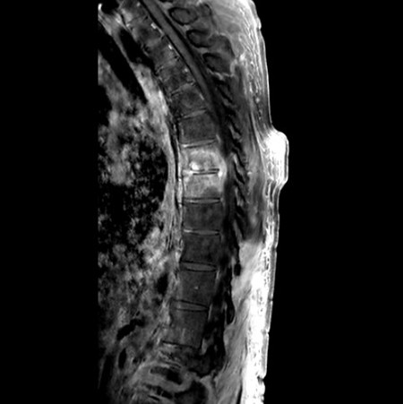
APostsurgical(5%)
BHematogenous spread(89%)
CLocal invasion(6%)
DCSF spread(0%)
Your answerB
Correct answerB. Hematogenous spread
Vital Concept
Spondylodiscitis also referred to as discitis-osteomyelitis, is characterized by an infection involving the intervertebral disc and adjacent vertebrae. Spread is most commonly hematogenous. MRI is the imaging modality of choice due to its very high sensitivity and specificity.
Explanation
Hematogenous spread
The most common mechanism is hematogenous spread via bacteremia. Septic emboli lodge in metaphyseal vessels near vertebral endplates, causing ischemia and infarction. The infection then spreads across the avascular disc space to involve the adjacent vertebral body, creating characteristic two-level involvement.
One-third of patients have associated endocarditis, emphasizing the hematogenous route. The anterior subchondral region is typically affected first due to rich blood supply.
Incorrect Answers:
A. Though spondylodiscitis can develop after surgery or local invasion, they are much rarer mechanisms than hematogenous spread.
C. It may occur after local interventional procedures, but it is uncommon.
D. CSF spread is more associated with meningitis.
Vital Concept: Spondylodiscitis also referred to as discitis-osteomyelitis, is characterized by an infection involving the intervertebral disc and adjacent vertebrae. Spread is most commonly hematogenous. MRI is the imaging modality of choice due to its very high sensitivity and specificity.
Q2
hard QID 12319
Correct
A 32-year-old female presents with acute right lower quadrant pain for the past 2 days but is now easing up. Their last menstrual period (LMP) was 4 weeks ago and the patient is noted to have irregular cycles. Their beta-HCG is negative. A pelvic ultrasound is ordered with representative image of the right ovary shown below (top image). The subsequent images were performed 2 weeks after symptom onset (second and third images). What is the most likely cause of the patient's acute pain?
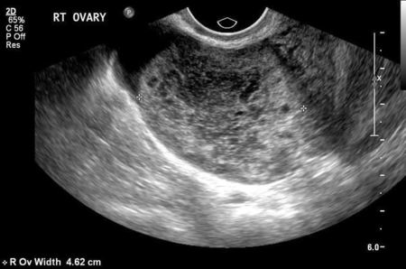
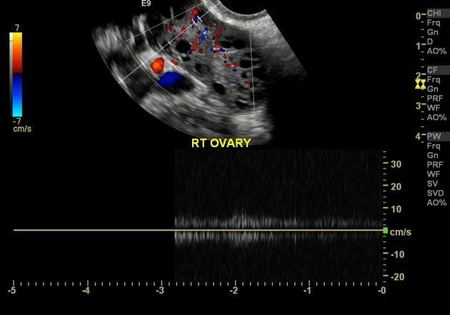
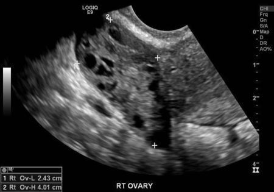
AHemorrhagic cyst(19%)
BNormal ovary(2%)
COvarian torsion-detorsion(71%)
DOvarian cyst(8%)
Your answerC
Correct answerC. Ovarian torsion-detorsion
Vital Concept
Spontaneous torsion and detorsion can occur before ischemia develops, causing massive ovarian edema that mimics torsion imaging findings (enlarged ovary with peripheral follicles) but lacks the characteristic twisted pedicle sign. This creates ongoing risk for recurrent torsion episodes and requires clinical correlation to distinguish from acute torsion.
Explanation
Ovarian torsion-detorsion
The right ovary appears prominent and diffusely edematous in the top image. Although not shown here, the vessels may demonstrate a corkscrew appearance typical of a whirlpool sign secondary to a twisted ovarian pedicle. Typical features of ovarian torsion are present on the initial scan—particularly diffuse ovarian edema. Vascular flow is seen in the second image with resolution of the edema demonstrated on the third image. In the context of patient's symptoms concurrently improving, these images are most representative of ovarian torsion-detorsion.
As the patient's symptoms had resolved, no laparoscopy was performed despite the scan findings. Scan performed two weeks later demonstrates a striking resolution of ovarian edema, supporting the suspicion of spontaneous de-torsion.
Incorrect Answers:
A. Hemorrhagic cysts tend to demonstrate internal echoes in a matrix or fishnet configuration, which represents a clot. Varying degrees of cystic or anechoic spaces are present depending on the degree of clot evolution/retraction. This finding is not present on the provided images.
B. The right ovary is abnormal, demonstrating enlargement and edema in the first image.
D. Though small cysts/follicles are seen in the ovary, these findings are not likely to be the cause of patient's pain.
Vital Concept: Spontaneous torsion and detorsion can occur before ischemia develops, causing massive ovarian edema that mimics torsion imaging findings (enlarged ovary with peripheral follicles) but lacks the characteristic twisted pedicle sign. This creates ongoing risk for recurrent torsion episodes and requires clinical correlation to distinguish from acute torsion.
Q3
hard QID 3021
Correct
The patient has a history of 10 weeks amenorrhoea. Which of the following is consistent with the findings?
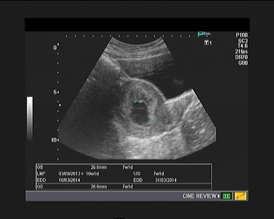
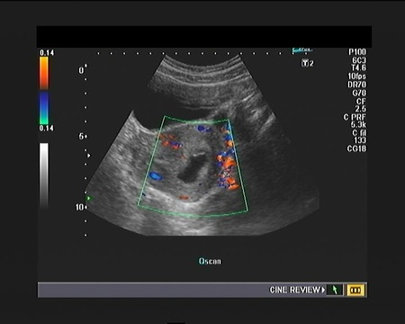
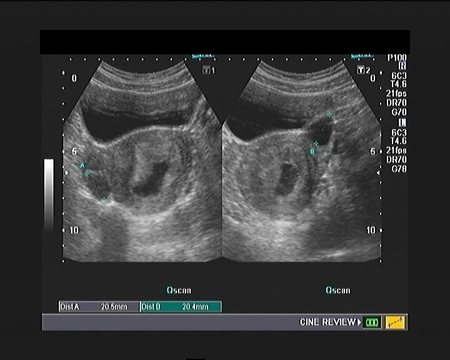
ANormal intrauterine pregnancy with functional cysts of the ovaries(7%)
BAnembryonic gestation with functional cysts of the ovaries(77%)
CNormal intrauterine pregnancy with fibroids of the uterus(2%)
DEctopic pregnancy(14%)
ENabothian cysts of the cervix(0%)
Your answerB
Correct answerB. Anembryonic gestation with functional cysts of the ovaries
Vital Concept
Gestational sac ≥25 mm without embryo at appropriate gestational age represents anembryonic pregnancy—diagnostic of early pregnancy loss. No need for follow-up imaging as this meets definitive criteria for non-viable pregnancy requiring counseling and management planning.
Explanation
Anembryonic gestation with functional cysts of the ovaries
This is an abnormal pregnancy with an anembryonic gestation. There is an intrauterine gestation sac measuring over 25 mm, but it is irregular in shape and lacks a normal embryo or fetal pole. There is no evidence of extra-uterine gestation to suggest an ectopic pregnancy. There is also no evidence of uterine fibroids or Nabothian cysts of the cervix. In addition, there is evidence of bilateral functional ovarian cysts, which do not appear to be significant.
Incorrect Answers:
A. This is not a normal pregnancy.
C. There is no evidence of uterine fibroids.
D. There is no evidence of extra-uterine gestation sac.
E. The cervix does not show any evidence of cystic lesions.
Vital Concept: Gestational sac ≥25 mm without embryo at appropriate gestational age represents anembryonic pregnancy—diagnostic of early pregnancy loss. No need for follow-up imaging as this meets definitive criteria for non-viable pregnancy requiring counseling and management planning.
Q4
QID 5026
Correct
A 29-year-old patient who is 10 weeks pregnant is involved in a major trauma. She receives a CT scan resulting in an estimated absorbed fetal dose of 25 mGy. She wants to know the true risks to her pregnancy. Which of the following is true?
AThere is a high likelihood that the fetus may have severe birth defects.(3%)
BThere is no significant increase in the probability of birth defects, but there is a high risk of intellectual disability.(6%)
CThere is no significant increased risk of birth defects or intellectual disability, but the lifetime risk of cancer is slightly increased.(65%)
DThere is no significant increased risk of any birth defects, intellectual disability, or cancer above baseline.(23%)
EThere is a high likelihood that the pregnancy will fail.(3%)
Your answerC
Correct answerC. There is no significant increased risk of birth defects or intellectual disability, but the lifetime risk of cancer is slightly increased.
Vital Concept
Radiation doses below 100 mGy during pregnancy do not cause identifiable developmental defects. Counseling should emphasize positive outcomes, stating the child will have nearly the same chances of being healthy as any other child, with only a very small increase in lifetime cancer risk that is typically negligible.
Explanation
There is no significant increased risk of birth defects or intellectual disability, but the lifetime risk of cancer is slightly increased.
According to the ACR-SPR Practice Parameter for Imaging Pregnant or Potentially Pregnant Patients with Ionizing Radiation, at exposures less than 50 mGy, there is no increased risk of birth defects or intellectual disability. However, there is an increased risk of lifetime cancer estimated to be 0.4% per 10 mGy of exposure to the fetus (in this case, 25 mGy adds 1% to lifetime cancer risk).
Incorrect Answers:
A.B. At fetal doses > 100 mGy, there is a proportionally higher increase in adverse effects.
D. There is no significant increased risk of any birth defects, intellectual disability, however, cancer risk is above baseline.
E. No risk to fail in this radiation exposure level.
Vital Concept: Radiation doses below 100 mGy during pregnancy do not cause identifiable developmental defects. Counseling should emphasize positive outcomes, stating the child will have nearly the same chances of being healthy as any other child, with only a very small increase in lifetime cancer risk that is typically negligible.
Q5
moderate QID 37416
Correct
A 44-year-old female patient presented for annual screening mammography, which showed an abnormal left axillary lymph node and no abnormality in the breast. The patient is called back for ultrasound-guided fine needle aspiration of the lymph node. The results revealed breast adenocarcinoma. Which of the following is the next appropriate step in management?
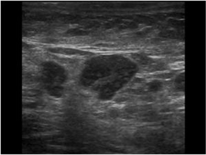
ABreast MRI(89%)
BExcision of the node(1%)
CBIRADS 3 designation and short interval follow-up(0%)
DChest CT(4%)
EPET CT(6%)
Your answerA
Correct answerA. Breast MRI
Vital Concept
Breast MRI excels at detecting noncalcified occult lesions and problem-solving mammographic asymmetries but has limited utility for excluding malignancy in calcified lesions.
Explanation
Breast MRI
In a patient who presents with isolated metastatic adenocarcinoma involving axillary lymph nodes without evidence of breast cancer on mammography or physical examination, it is assumed that there is an occult ipsilateral breast cancer. In this scenario, breast MRI is useful to identify a primary malignancy in the breast to confirm the diagnosis, and for surgical planning.
Incorrect Answers:
B. Excision of the node will undoubtedly be part of the treatment plan, but fully characterizing the location and extent of disease is first necessary. Additionally, a high percentage of patients with unilateral metastatic axillary lymphadenopathy treated with axillary lymph node dissection without breast intervention were found to subsequently develop ipsilateral breast cancer.
C. This would constitute a BIRADS 6 as this is biopsy proven malignancy. A BIRADS 3 designation and short interval follow-up is not appropriate.
D, E. Chest CT and PET CT do not have the same usefulness in the identification of the primary disease site or potential additional foci of malignancy.
Vital Concept: Breast MRI excels at detecting noncalcified occult lesions and problem-solving mammographic asymmetries but has limited utility for excluding malignancy in calcified lesions.
Q6
moderate QID 38140
Correct
Which of the following is true regarding hepatic involvement of this process?
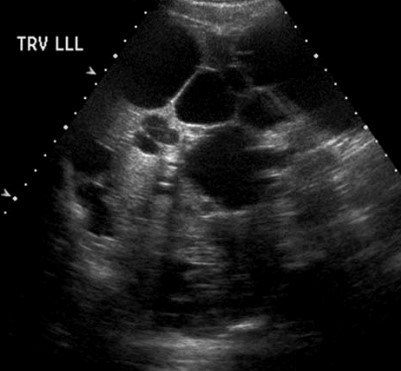
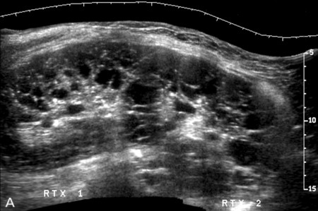
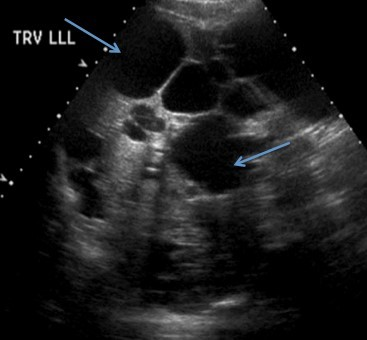
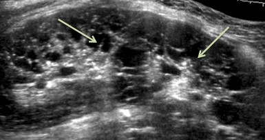
AIt is the most frequently involved organ outside of the kidneys.(91%)
BLiver cysts typically develop at the same time as renal cysts.(2%)
CFrequent complications include bleeding and infection.(1%)
DMalignancy is common, and patients should undergo routine surveillance.(1%)
EEventually liver failure will develop.(5%)
Your answerA
Correct answerA. It is the most frequently involved organ outside of the kidneys.
Explanation
It is the most frequently involved organ outside of the kidneys.
The images demonstrate numerous renal cysts (green arrows) and hepatic cysts (blue arrows). These are findings of autosomal dominant polycystic kidney disease (ADPKD). This is one of the most common serious hereditary diseases, found in 1:400 to 1:1000 individuals. Cysts are commonly present in other organs, with the liver being the most common and involved in 75% of cases by the age of 60. Other, less frequently involved organ systems include the pancreas, spleen, ovaries, seminal vesicles, and prostate.
Incorrect Answers:
B. In ADPKD, liver cysts seem to develop later than renal cysts, and cross-sectional studies by ultrasonography or CT demonstrate a steady increase in frequency with advancing age.
C. Complications of liver involvement by ADPCK are infrequent. Most patients with polycystic liver have a “huge, silent, and durable liver." The most frequent complication is pain. Bleeding and infection are less often seen. Renal complications are a much more frequent cause of morbidity and mortality in these patients.
D. Malignancy is uncommon. Only a few cases of cholangiocarcinoma have been identified, and the link with hepatic cysts is unclear.
E. Autosomal dominant polycystic kidney disease is the most common hereditary cause of end-stage renal failure (ESRF), accounting for 4-10% of all cases. However, in contrast to progressive deterioration of renal function over decades, hepatic function remains unaffected whatever the size of the liver. This is ascribed to the preservation of liver parenchyma.
Q7
QID 47104
Correct
A 67-year-old male patient with a history of carotid stenosis presents for ultrasound evaluation. The Society for Radiologist in Ultrasound most often grades stenosis based on which of the following values?
Peak systolic velocity is the most important metric for assessing carotid stenosis severity on Doppler ultrasound.
Explanation
Internal carotid peak systolic velocity
Carotid atherosclerosis is the leading cause of CVA in the United States and the third leading cause of morbidity and mortality. Although angiography is the gold standard, it is invasive and expensive. Ultrasound assessment of carotid arterial atherosclerotic disease has become the first choice for carotid stenosis screening. It allows evaluation of both the macroscopic appearance of plaques as well as flow characteristics in the carotid artery. The Society of Radiologists in Ultrasound (SRU) consensus developed recommendations for the diagnosis and stratification of ICA stenosis based on internal carotid peak systolic velocity. The net flux at two different points along a single nonbranching vessel must remain equal. With regard to the ICA, the flux at the point of maximal stenosis in the ICA must equal the flux distally at the point of normal luminal diameter. Elevation of the internal carotid artery PSV has been shown to be the single most useful Doppler sonographic parameter for detecting hemodynamically significant carotid stenosis and for selecting patients for carotid endarterectomy. Additional criteria include ICA/CCA peak systolic velocity ratio and end diastolic velocity.
Vital Concept: Peak systolic velocity is the most important metric for assessing carotid stenosis severity on Doppler ultrasound.
Q8
easy QID 37623
Correct
Which of the following is true regarding root cause analysis?
AIt is a structured method used to analyze serious adverse events.(97%)
BIt is not yet widely used as an error analysis tool in health care.(0%)
CIt focuses on mistakes by individuals.(0%)
DThe goal of RCA is to identify only active errors.(0%)
EIt deemphasizes identifying underlying problems that increase the likelihood of errors.(2%)
Your answerA
Correct answerA. It is a structured method used to analyze serious adverse events.
Explanation
It is a structured method used to analyze serious adverse events.
Initially developed to analyze industrial accidents, RCA is now widely deployed as an error analysis tool in health care. A central tenet of RCA is identifying underlying problems that increase the likelihood of errors while avoiding the trap of focusing on mistakes by individuals. Accordingly, some find the term to be misleading and have suggested replacing the term "root cause analysis" with "systems analysis." The goal of RCA is thus to identify both active errors and latent errors (the hidden problems within health care systems that contribute to adverse events).
RCAs should generally follow a pre-specified protocol that begins with data collection and reconstruction of the event in question through record review and participant interviews. A multidisciplinary team should then analyze the sequence of events leading to the error, with the goals of identifying how the event occurred (through identification of active errors) and why the event occurred (through systematic identification and analysis of latent errors). The ultimate goal of RCA, is to prevent future harm by eliminating the latent errors that so often underlie adverse events.
Incorrect Answers:
B. RCA is widely used as an error analysis tool in health care.
C. RCA focuses on problems that can lead to errors.
D. RCA aims to identify both active errors and potential errors.
E. It de-emphasizes focusing on mistakes by individuals.
Q9
hard QID 58872
Correct
A 54-year-old male presents with an incidental radiographic finding shown below. What is the best course of action?
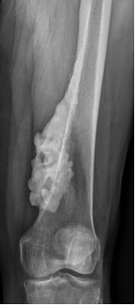
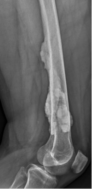
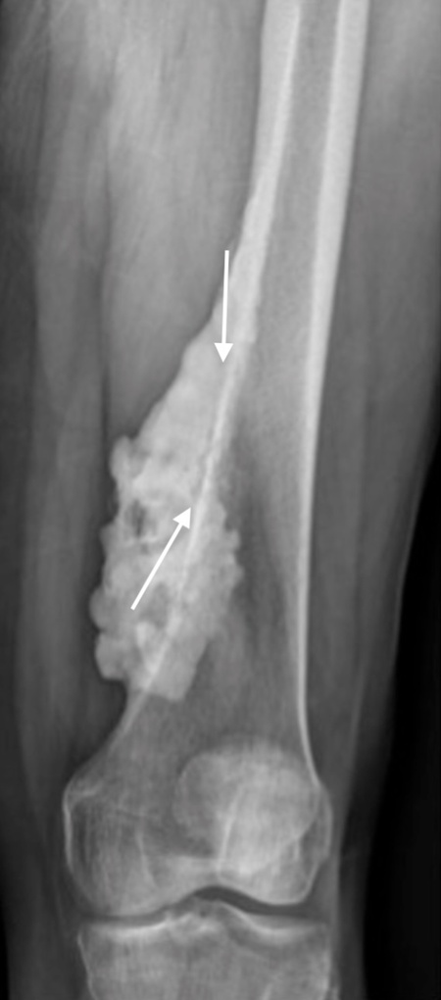
ACT guided bone biopsy(4%)
BNo further work-up required(29%)
CBone scan(2%)
DContrast enhanced MRI(65%)
Your answerD
Correct answerD. Contrast enhanced MRI
Explanation
Contrast enhanced MRI
Above frontal and lateral radiographs of the left femur show marked undulating periosteal hyperostosis. Though this appearance can be seen in the setting of melorheostosis, a benign condition that presents with the appearance of dripping candle wax, there is a questionable radiographic "string sign" that can be seen in the setting of parosteal osteosarcoma. The string sign is a radiolucent line that separates the plane of the tumor and affected bone in parosteal osteosarcomas (arrows). Given this differential, contrast enhanced MRI is a reasonable next step to more specifically characterize the lesion.
Incorrect Answers:
A. Though tisse sampling may be necessary for definitive diagnosis, MRI is non-invasive and would be a better next step.
B. Given the differential that includes parosteal osteosarcoma, ending the work-up would not be appropriate here.
C. Increased uptake on bone scan would be observed, but would not be needed for additional diagnostic information.
Q10
easy QID 38148
Correct
The differential diagnosis for this entity includes all of the following except?
The image shows echogenic foci (yellow arrows), which represent calcifications within the renal medulla that demonstrate posterior shadowing (blue arrows). This appearance is diagnostic of medullary nephrocalcinosis. Renal medullary nephrocalcinosis is the most common form of nephrocalcinosis and refers to the deposition of calcium salts in the medulla of the kidney. There are many underlying etiologies, including hyperparathyroidism, medullary sponge kidney, type 1 renal tubular acidosis, hypervitaminosis D, milk-alkali syndrome, and multiple myeloma. It should be contrasted with cortical nephrocalcinosis, which is less common and may be caused by autosomal recessive polycystic disease, acute renal cortical necrosis caused by sepsis, toxemia of pregnancy, drugs, snake bites, arsenic poisoning, extracorporeal, shock wave lithotripsy, or hemolytic uremic syndrome (in addition to other causes).
Q11
easy QID 43786
Correct
Which of the following is true regarding the injury below?
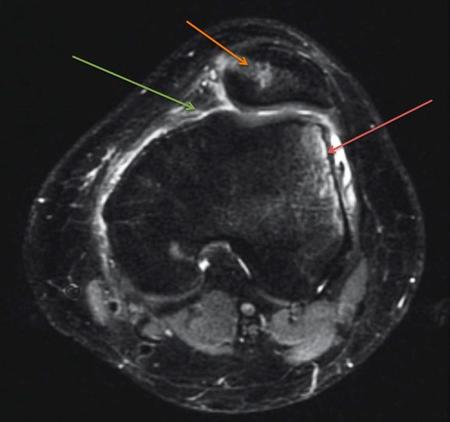
AMost patients are older individuals(0%)
BThe highest incidence is seen in men in the 2nd decade of life(4%)
CReinjury is relatively uncommon(0%)
DMinor complications and discomfort may occur if not treated adequately(1%)
EPredisposing factors include trochlear dysplasia, patella alta, and lateralization of the tibial tuberosity(94%)
Your answerE
Correct answerE. Predisposing factors include trochlear dysplasia, patella alta, and lateralization of the tibial tuberosity
Explanation
Predisposing factors include trochlear dysplasia, patella alta, and lateralization of the tibial tuberosity
The axial fat-saturated T2 image shows a reciprocal marrow edema lateral femoral condyle (red arrow) and the medial patellar facet (orange arrow). A useful way to distinguish medial and lateral on axial images through the patella is to note that the Lateral patellar facet is longer. Note also that there has been an injury to the medial patellofemoral ligament and retinaculum (green arrow). These findings are all consistent with a recent lateral patellar translocation. MR has replaced diagnostic arthroscopy as the primary diagnostic modality following clinical suspicion of initial or recurrent patellar dislocation. It is highly sensitive for detection of capsular, ligamentous, cartilaginous, and bone injuries associated with patellar dislocation. Most patients with patellar dislocation are young and active individuals, with women in the 2nd decade of life having a high risk, not men. Nearly half of all patients with a first-time dislocation will sustain further dislocations after initial conservative management. Adequate treatment is imperative, as chronic instability of the patellofemoral joint and recurrent dislocation may lead to progressive cartilage damage and severe arthritis. MR is useful not just in detecting bone, cartilage, and soft tissue injury, but also in assessing anatomic variants that may contribute to chronic patellar instability. The most important factors predisposing to patellar instability include trochlear dysplasia, patella alta, and excessive lateralization of the tibial tuberosity. The aim of surgery is twofold: to repair the knee damage caused by patellar dislocation and to correct those anomalies that are known to contribute to future dislocations.
Q12
hard QID 37666
Correct
What will
AA fasted state(5%)
BAn increase in matrix size(8%)
CAn increase in the region of interest size (assume centered on the target)(44%)
DAn increase in body mass/overall fat content(42%)
Your answerC
Correct answerC. An increase in the region of interest size (assume centered on the target)
Vital Concept
To measure SUV, a 2D or 3D region of interest (ROI) is centered upon a target. By increasing the ROI there is more volume averaging and more statistical variability, leading to an overall decrease in SUV.
Explanation
An increase in the region of interest size (assume centered on the target)
To measure SUV, a 2D or 3D region of interest (ROI) is centered upon a target. The measured radioactivity within the ROI is normalized to the average radioactivity concentration in the body, which is approximated as the injected dose divided by patient weight (weight-based dose). SUV incorporates information from multiple voxels comprising the ROI, making it less sensitive to image noise. SUV of an ROI is calculated as follows:
SUV = (ROI tracer concentration (kBq/mL)) / weight-based dose (MBq/kg)
Measured SUV will therefore vary depending on which voxels are included in the average, so it is sensitive to ROI size/placement. By increasing the ROI surrounding a target there is more volume average and more statistical variability, leading to an overall decrease in SUV. It is important to note that many institutions now use the maximum SUV, which is not affected by changes in size/placement of ROI.
Incorrect Answers:
A. The effect of glucose on FDG uptake is only a slight increase in muscular uptake, with no change in uptake in the remaining tissues of the body.
B. Using a larger matrix for a given FOV increases SUV measurements because larger matrix sizes for a constant FOV make each voxel smaller. Smaller voxels yield higher spatial resolution but also increase the probability of sampling the peak of the lesion.
D. Increase in body mass/overall fat content results in lower weight-based dose and therefore decreases the denominator of the SUV equation, ultimately resulting in increase of the SUV.
Vital Concept: To measure SUV, a 2D or 3D region of interest (ROI) is centered upon a target. By increasing the ROI there is more volume averaging and more statistical variability, leading to an overall decrease in SUV.
Q13
easy QID 39314
Correct
Which of the following MR safety zones has unrestricted access?
AZone I(98%)
BZone II(1%)
CZone III(0%)
DZone IV(1%)
EZone V(0%)
Your answerA
Correct answerA. Zone I
Explanation
Zone I
There are several safety measures involved in the use of magnetic resonance (MR) scanners, primarily due to the scanners’ strong magnetic fields. One safety measure is the zone classification system that signifies progressive monitoring and restriction of entry into higher-numbered, more controlled zones. Zone I signifies unrestricted access. It is the area through which patients and personnel enter the controlled MR environment.
Incorrect Answers:
B. Zone II is the interface between the unrestricted access of Zone I and the tightly controlled access to Zones III and IV. Zone II can be used to greet patients, obtain histories, and screen patients for safety issues. Patients in Zone II should be under the supervision of MR personnel.
C. Zone III is the area where there is potential danger of serious injury or death from interaction between unscreened people or ferromagnetic objects and the magnetic field of the scanner. The scanner control room is typically in Zone III. Access to Zone III must be strictly restricted and under the supervision of MR personnel with physical restrictions such as locks or passkey systems.
D. Zone IV is the highest of the four MR safety zones. Zone IV not only denotes the location of the MR scanner magnet room. It is also accessible only under the direct observation of MR personnel. Zone IV should be clearly demarcated and marked as potentially hazardous due to the strong magnetic field.
E. Zone V does not currently exist within the MR safety zone classification system. The highest, most controlled level in the classification system is Zone IV.
Q14
moderate QID 3060
Correct
A 19-year-old male presents to his primary care physician with a 1-week history of palpitations, weight loss, night sweats, and anterior neck pain. Thyroid lab values demonstrate an abnormally low TSH and markedly elevated free T4. A thyroid uptake scan is ordered and shown below. Imaging findings are most consistent with:
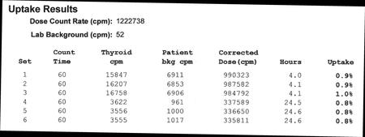
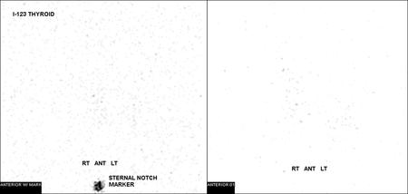
AGraves’ disease(3%)
BHashimoto's thyroiditis(10%)
CNormal scan(0%)
DSubacute thyroiditis(86%)
EPapillary thyroid cancer(0%)
Your answerD
Correct answerD. Subacute thyroiditis
Vital Concept
The combination of thyrotoxic symptoms with anterior neck pain and absent thyroid uptake is most compatible with subacute thyroiditis, representing destructive thyroid inflammation that releases preformed hormones while simultaneously damaging the iodine-trapping mechanism. Supportive care rather than antithyroid drugs is usually indicated, as the thyrotoxicosis is self-limited and will typically progress through hyperthyroid, hypothyroid, and recovery phases over several months.
Explanation
Subacute thyroiditis
Subacute thyroiditis is the correct answer. There is essentially no uptake of radioiodine within the thyroid gland, which is confirmed by quantitative measurements (normal radiotracer uptake ranges are 6% to 18% at 4 hours and 10% to 35% at 24 hours). Imaging findings combined with the patient's abnormal thyroid function test and clinical symptoms are consistent with subacute thyroiditis, a condition where there is diffuse inflammation of the thyroid. This leads to the release of thyroid hormone in the acute phase, with the normal response of the thyroid to decrease iodine uptake. In Graves' disease and the early hyperthyroid state of Hashimoto's thyroiditis, one would expect increased uptake of radioactive iodine, not the absence of uptake. Complete lack of radioiodine uptake is never normal on a thyroid uptake scan.
Incorrect Answers:
A. In Graves' disease, one would expect diffusely increased radiotracer uptake, converse to what is seen in this case.
B. In the early hyperthyroid state of Hashimoto's thyroiditis, one would expect possible irregular areas of increased radiotracer uptake, converse to what is seen in this case.
C. The scan is markedly abnormal.
E. Papillary thyroid cancer is typically asymptomatic and would not present in an acute fashion. Furthermore, the imaging characteristics of this case would not be seen in the setting of thyroid carcinoma.
Vital Concept: The combination of thyrotoxic symptoms with anterior neck pain and absent thyroid uptake is most compatible with subacute thyroiditis, representing destructive thyroid inflammation that releases preformed hormones while simultaneously damaging the iodine-trapping mechanism. Supportive care rather than antithyroid drugs is usually indicated, as the thyrotoxicosis is self-limited and will typically progress through hyperthyroid, hypothyroid, and recovery phases over several months.
Q15
hard QID 2912
Correct
Which of the following is the minimum threshold dose for a single acute exposure to cause opacification of the lens of the eye?
A0.5 Gy(50%)
B2 Gy(29%)
C2 Sv(10%)
D8 Gy(9%)
E8 Sv(3%)
Your answerA
Correct answerA. 0.5 Gy
Explanation
0.5 Gy
There are several values related to radiation exposure laid out in the annual RISC study guide that are highly testable and worth knowing. Threshold doses (Gy) are tabulated in the study guide as follows:
Skin:
Transient erythema/epilation – 2 Gy
Dry desquamation – 8 Gy
Moist desquamation – 15 Gy
Lens:
Opacification (single acute exposure) – 0.5 to 2 Gy
Opacification (fractionated) – 0.5 Gy
Cataract (single acute) – 0.5 Gy
Q16
hard QID 3082
Correct
A 47-year-old male presents with right upper quadrant pain, nausea and vomiting, and an elevated lipase. An MRI of the abdomen was obtained to rule out gallstone pancreatitis. An additional hepatobiliary scan was obtained to evaluate for cholecystitis. The first hour of imaging demonstrated no uptake of radiotracer within the region of the gallbladder. Morphine was administered and pre/post planar images of the abdomen are shown below. Which of the following is the most likely diagnosis?
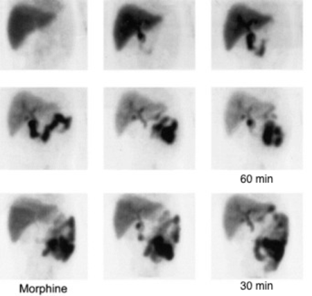
AChronic cholecystitis(8%)
BAcute cholecystitis(79%)
CNormal scan(6%)
DGallbladder dyskinesia(4%)
ENone of the above(3%)
Your answerB
Correct answerB. Acute cholecystitis
Vital Concept
Hepatobiliary scintigraphy is ordered when ultrasound is equivocal or clinical suspicion for acute cholecystitis remains high despite negative ultrasound. In contrast to ultrasound, it can provide functional assessment of cystic duct patency. Nonvisualization of gallbladder with normal liver function is highly sensitive for acute cholecystitis.
Explanation
Acute cholecystitis
Cholescintigraphy directly shows cystic duct obstruction and is therefore proven to be one of the most reliable noninvasive tests for the diagnosis of acute cholecystitis. Absence of gallbladder filling with simultaneous normal hepatic uptake and biliary excretion correlates with a diagnosis of acute cholecystitis, while normal gallbladder visualization excludes the diagnosis. In addition, low-grade biliary obstruction may be observed before it is present on ultrasonography.
In our present case, the 60-minute HIDA study on the top two rows shows small focal accumulation in the medial aspect of the gallbladder fossa initially at 30 minutes and persisting until 60 minutes. This is the nubbin sign and represents activity in the cystic duct distal to the obstruction. Common duct and duodenal activity clears medial to this. The common duct appears displaced medially.
On the bottom row, morphine is given at 70 minutes and imaging continued for 30 additional minutes. The focal accumulation is not initially seen after morphine but recurs and persists between 15 and 30 minutes. The patient had acute cholecystitis with a stone impacted in the cystic duct.
Incorrect Answers:
A. Chronic cholecystitis on a hepatobiliary scan is based on patient presentation and delayed visualization of the gallbladder or poor ejection fraction.
C. This case does not display normal movement through the hepatobiliary system.
D. Gallbladder dyskinesia is characterized by poor ejection fraction, which is determined by administering a cholecystokinin (CCK) analog, sincalide, and calculating differential radiotracer uptake by drawing a region of interest around the gallbladder.
Vital Concept: Hepatobiliary scintigraphy is ordered when ultrasound is equivocal or clinical suspicion for acute cholecystitis remains high despite negative ultrasound. In contrast to ultrasound, it can provide functional assessment of cystic duct patency. Nonvisualization of gallbladder with normal liver function is highly sensitive for acute cholecystitis.
Q17
QID 22417
Correct
A 32-year-old male patient undergoes the non-inverted angiogram shown. Which of the following contrast agents was most likely used, for which of the following indications?
Carbon dioxide is appropriate for DSA in patients with chronic kidney disease or severe iodine allergy. Carbon dioxide allows intervention while significantly reducing risk of contrast-induced nephropathy compared to iodinated contrast.
Explanation
Carbon dioxide; chronic renal failure
The image shows a negative contrast agent being used for angiography, which is what gives the vessels a bright appearance (green arrow). Negative contrast agents are gases of low density (air, oxygen, carbon dioxide) which appear radiolucent. The agents can also be combined to produce a double-contrast study which is often the best way to give optimal mucosal detail.
Carbon dioxide (CO2) has been shown to be a safe and reliable negative contrast agent for the performance of angiography and angiographic procedures in the setting of renal failure and iodinated contrast allergy. It is eliminated by the lungs, widely abundant, and less expensive than iodinated contrast agents. Another advantage is that its low viscosity allows the use of very small-caliber catheters without significant flow resistance.
Incorrect Answers:
A. B. While gadolinium may be used for the angiographic imaging of chronic renal failure or in the setting of iodine allergy, it is not considered a negative contrast agent and would not provide the vessel appearance shown here.
C. While iodine may be used for routine angiography, it is not considered a negative contrast agent and would not provide the vessel appearance shown here.
E. This is not an indication for negative contrast angiography.
Vital Concept: Carbon dioxide is appropriate for DSA in patients with chronic kidney disease or severe iodine allergy. Carbon dioxide allows intervention while significantly reducing risk of contrast-induced nephropathy compared to iodinated contrast.
Q18
moderate QID 56858
Correct
A 53-year-old male presents with left buttock pain for several months recalcitrant to physical therapy and NSAIDs. Radiographs reveal an abnormality, prompting further investigation with CT and MRI as shown. What type of internal matrix is depicted in the lesion below?
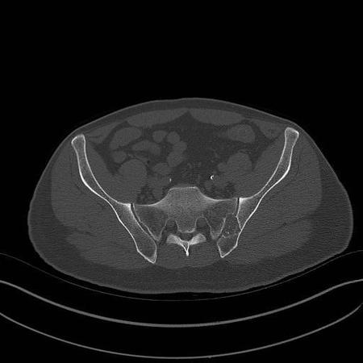
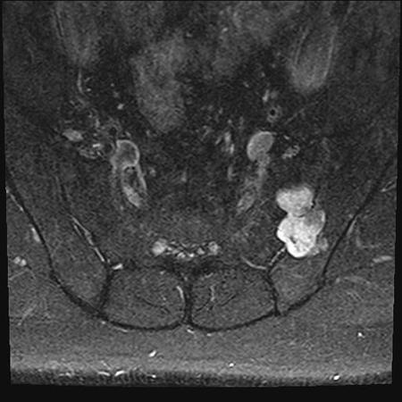
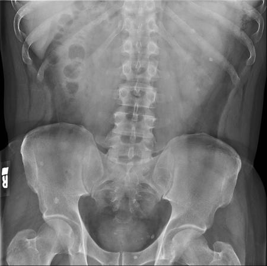
AOsteoid(3%)
BGround-glass(3%)
CChondroid(90%)
DMixed elements(3%)
Your answerC
Correct answerC. Chondroid
Explanation
Chondroid
Radiograph reveals a lytic osseous lesion in the left sacral ala (yellow arrow). Unenhanced CT reveals internal mineralization with a ring and arc appearance, consistent with a chondroid matrix (red arrow). The T2-weighted MRI image confirms cartilaginous etiology, given its high T2 signal and lobulated appearance (blue arrow). Ultimate tissue diagnosis proved to be a chondrosarcoma. Chondrosarcomas can range from indolent low-grade types to aggressive high-grade types with malignant potential. They may be differentiated from other primary bone sarcomas by their classical chondroid matrix, often just by radiographs.
Incorrect Answers:
A. Osteoid matrix would appear more cloud-like with amorphous hyper-attenuation.
B. Ground-glass matrix would appear more uniform and somewhat translucent.
D. Mixed elements are not depicted in this case.
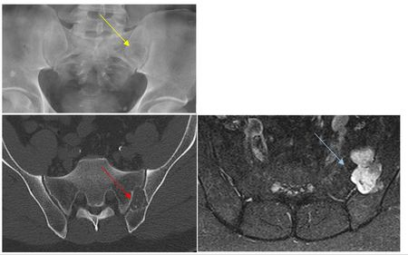
Q19
easy QID 20811
Correct
A 74-year-old man with a history of chronic alcohol use disorder presents with mental status changes. What is the diagnosis?
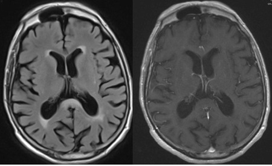
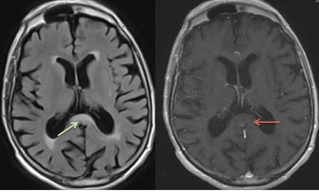
AMultiple sclerosis(0%)
BGlioblastoma multiforme(0%)
CNormal pressure hydrocephalus(8%)
DMarchiafava-Bignami disease(90%)
ECarbon monoxide poisoning(1%)
Your answerD
Correct answerD. Marchiafava-Bignami disease
Explanation
Marchiafava-Bignami disease
Explanation:
Alcoholic encephalopathy may present with many different imaging manifestations such as ventricular dilatation, T2 hyperintensity, and volume loss within the mammillary bodies, among others. However, a pathognomonic imaging finding of one type of alcoholic encephalopathy is FLAIR hyperintensity (green arrow) and non-enhancing T1 hypointensity (red arrow) within fibers of the splenium of the corpus callosum. This finding is virtually pathognomonic for Marchiafava-Bignami disease.
Incorrect Answers:
A. Multiple sclerosis may produce callosal T2 hyperintensity. However, the given history and lack of other T2 hyperintense lesions should direct you to another diagnosis.
B. Glioblastoma multiforme frequently involves the corpus callosum and often utilizes the corpus callosum to cross into a contralateral hemisphere (butterfly lesion). However, the lack of associated enhancement or mass should direct you toward an alternative diagnosis.
C. Normal pressure hydrocephalus is a clinical diagnosis in which the ventricles may be seen to be diffusely dilated. The classic clinical triad of ataxia, dementia, and incontinence often is only partially present. One common method of confirming the diagnosis is to determine if there is clinical improvement after CSF drainage procedures.
E. Carbon monoxide poisoning is classically associated with abnormal T2 hyperintensity within the globus pallidus, not within the corpus callosum. There may be associated hemorrhage (evidenced by susceptibility artifact and/or T1 hyperintensity) and/or decreased diffusivity (restricted diffusion).
Q20
moderate QID 2759
Correct
A 68-year-old male is evaluated for abdominal pain and computed tomography (CT) reveals a pancreas mass. Biopsy of the mass reveals intraductal papillary mucinous neoplasm (IPMN). Which of the following additional features would most strongly support resection?
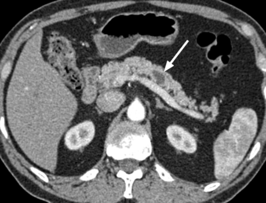
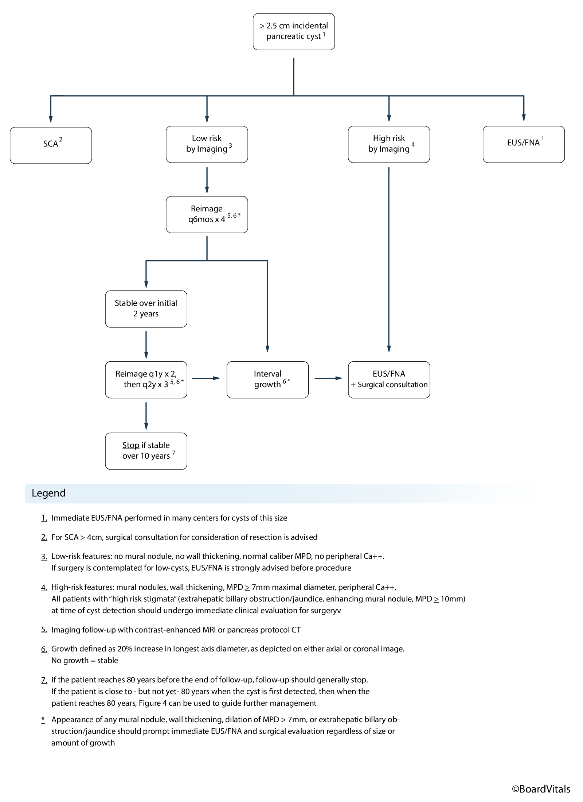
AMural nodule >5 mm(80%)
BSide-branch morphology(3%)
CMain pancreatic duct measuring 7 mm in diameter(4%)
DThickened and enhancing cyst walls(2%)
Your answerA
Correct answerA. Mural nodule >5 mm
Vital Concept
According to the Kyoto guidelines, intraductal papillary neoplasm (IPMN) should undergo resection if any high-risk features are present. These high-risk features are obstructive jaundice with cystic lesion in the head of the pancreas, solid component or mural nodule >5 mm, main pancreatic duct >10 mm, or suspicious cytology results.
Explanation
Mural nodule >5 mm
Guidelines for evaluation and management of intraductal papillary neoplasm (IPMN) is a common topic, both on exams and in practice. Intraductal papillary mucinous neoplasm (IPMN) may be within the main duct, side-branch, or a combination of these. Main duct IPMNs present with diffuse pancreatic ductal dilatation, whereas a side-branch IPMN appears as a cystic focus or cluster of cysts, often with communication to the main pancreatic duct. The presence of a mural nodule larger than 5 mm is considered a high-risk feature by Kyoto guidelines; when this finding is present, resection is warranted if clinically appropriate.
B. Side-branch Intraductal papillary mucinous neoplasm (IPMNs) have a lower malignant potential than main duct IPMNs. This feature alone would not definitively prompt resection.
C. Though size of the main pancreatic duct between 5 and 10 mm is considered a worrisome feature by Kyoto guidelines, the presence of this finding alone would not warrant immediate resection. Resection would be considered if the patient also has repeated bouts of acute pancreatitis, multiple additional worrisome features per Kyoto guidelines, or is otherwise fit/able to tolerate surgery.
D. Thickened and enhancing cyst walls are an additional worrisome feature. Similar to above, the presence of this finding alone would not warrant immediate resection. Resection would be considered if the patient also has repeated bouts of acute pancreatitis, multiple additional worrisome features per Kyoto guidelines, or is otherwise fit/able to tolerate surgery.
Vital Concept: According to the Kyoto guidelines, intraductal papillary neoplasm (IPMN) should undergo resection if any high-risk features are present. These high-risk features are obstructive jaundice with cystic lesion in the head of the pancreas, solid component or mural nodule >5 mm, main pancreatic duct >10 mm, or suspicious cytology results.
Q21
easy QID 55999
Correct
Based upon the MR image shown below, which of the following is the most accurate statement?
AThere was likely a prior posterior dislocation(4%)
BThere was likely a prior anterior dislocation(93%)
CThere was likely a prior acromioclavicular joint separation(1%)
DA reverse Hill-Sachs lesion may be present(3%)
Your answerB
Correct answerB. There was likely a prior anterior dislocation
Vital Concept
Anterior labral tears are most commonly caused by anterior shoulder dislocation or instability.
Explanation
There was likely a prior anterior dislocation
Anterior labral tears are typically the result of anterior glenohumeral dislocations, also resulting in Hill-Sachs fractures (impaction of the posterior, superior humeral head on the anterior, inferior glenoid/labrum).
Incorrect Answers:
A. Posterior dislocations result in posterior labral tears (reverse Bankart lesions) and impaction fractures of the anterior, medial humeral head, termed reverse Hill-Sachs lesions.
C. Based upon the image provided, there is no evidence of acromioclavicular joint pathology. The acromioclavicular joint is not shown.
D. Posterior dislocations result in posterior labral tears (reverse Bankart lesions) and impaction fractures of the anterior, medial humeral head, termed reverse Hill-Sachs lesions.
Vital Concept: Anterior labral tears are most commonly caused by anterior shoulder dislocation or instability.
Q22
hard QID 18090
Incorrect
Which of the following is the most likely diagnosis for this 32-year-old female patient with incidental finding on routine chest x-ray?
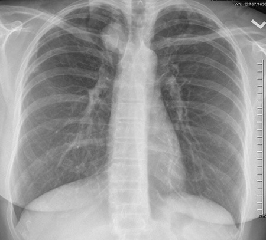
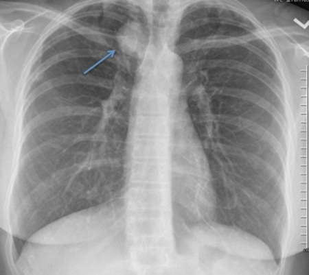
AAneurysm(1%)
BPrimary bronchogenic carcinoma(1%)
CForegut duplication cyst(34%)
DMetastasis(0%)
ENerve sheath tumor(63%)
Your answerC
Correct answerE. Nerve sheath tumor
Explanation
Nerve sheath tumor
The findings of this examination are most consistent with that of a posterior mediastinal mass. The finding of a well-defined upper border of a paramediastinal mass (blue arrow) cranial to the clavicles is considered a negative cervicothoracic sign and indicates a mass’ posterior mediastinal location, as the lungs extend above the level of the clavicles posteriorly. In contrast, a positive cervicothoracic sign involves obscured appearance of the upper border of a mediastinal mass at the level of the clavicles. This is because the anterior mediastinum ends at the level of the clavicles. The most likely posterior mediastinal mass is neurogenic in origin. A nerve sheath tumor, such as neurofibroma or schwannoma, would be concordant with this.
Incorrect Answers:
A. Aneurysm would be unlikely in this setting, as the mass appears to be separable from the thoracic aorta, and aneurysms arising from the supra-aortic vessels at this location would not demonstrate the cervicothoracic sign. Still, aneurysms are an important consideration for any mass, especially if a biopsy is to be considered.
B. Primary bronchogenic carcinoma would be a reasonable consideration in an older patient, especially in the setting of a prominent smoking history. However, given the paramediastinal location as well as the young age of the patient, another diagnosis should be first entertained.
C. Foregut duplication cysts are most commonly middle mediastinal in origin. Additionally, foregut duplication cysts are rarely this cranial in position, more commonly lying along the distal trachea or distal third of the esophagus.
D. Metastasis could be a reasonable consideration if the patient were known to have a primary malignancy. Particularly, sarcomas are known to produce smooth-bordered, rounded, cannonball metastases. However, the fact that there is only a single lesion and no associated bony destruction speaks against metastasis.
Q23
moderate QID 21025
Correct
A 56-year-old male patient presents for evaluation of hematuria. Which of the following is the most likely diagnosis?
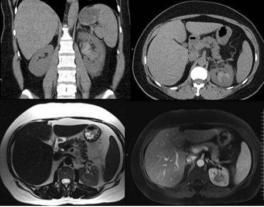
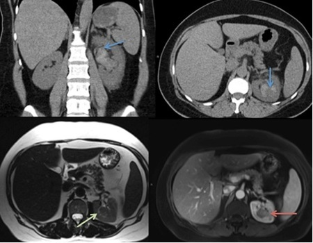
ARenal cell carcinoma, clear cell type(4%)
BRenal cell carcinoma, papillary type(13%)
CRenal cell carcinoma, chromophobe(2%)
DUrothelial cell carcinoma(80%)
EAngiomyolipoma(1%)
Your answerD
Correct answerD. Urothelial cell carcinoma
Explanation
Urothelial cell carcinoma
The delayed phase CT urogram (blue arrows), T2 (green arrow), and T1 post contrast (red arrow) images demonstrates a flat hypodense mass involving the renal calyces, conforming to the shape of the renal pelvis without loss of the normal renal contour. Urothelial cell carcinoma (UCC), as in the case presented, tends to demonstrate these properties. The tumor tends to be infiltrative in the renal parenchyma when it invades the kidney and produces a more diffuse pattern of irregular contrast enhancement. This is in comparison to a renal cell carcinoma (RCC), which produces a renal contour abnormality. Additionally, when evaluating UCC patients, special attention should be paid to the distal collecting system, ureter, and bladder, as UCC tends to be a multicentric tumor with metachronous and synchronous lesions quite common within the lower tract when an upper tract tumor is seen (and vice versa).
Incorrect Answers:
A. Clear cell type RCC is the most common type of renal cell carcinoma and appears commonly as a solid, enhancing renal mass. It can also appear as a solid enhancing nodule or enhancing thick septation within a renal cyst.
B. Papillary type RCC is less common than clear cell and has a characteristic appearance on MRI with prominent hypointensity on T2WI with susceptibility artifact on gradient echo imaging sequences secondary to hemosiderin deposition.
C. Chromophobe type RCC is an uncommon type of renal cell carcinoma and carries a better prognosis than its counterparts. It can mimic oncocytoma, appearing as an enhancing mass with a central scar.
E. Angiomyolipoma should be suggested when there is detectable fat density within a renal mass. In this case, no fat density is seen, and the mass appears to be centered within the collecting system. As such, angiomyolipoma is not a good choice in this situation.
Q24
easy QID 20601
Correct
The disease characterized by the findings in the image below in this 6-year-old child is associated with an increased risk of which of the following later in life?
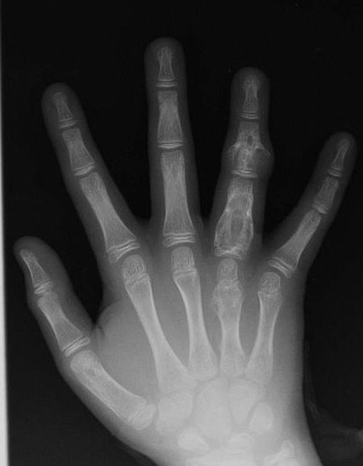
AOsteosarcoma(7%)
BRheumatoid arthritis(1%)
CChondrosarcoma(91%)
DDislocations(1%)
EEwing sarcoma(1%)
Your answerC
Correct answerC. Chondrosarcoma
Explanation
Chondrosarcoma
Ollier disease (also called enchondromatosis) is associated with chondrosarcomas later in life. It is caused by random mutations and is not hereditary.
Incorrect Answers:
A. Secondary osteosarcoma may occur as a result of Paget's disease of the bone and secondary to radiotherapy for other conditions.
B. Rheumatoid arthritis etiology is unknown and is most likely mutifactorial.
D. Dislocations do not have an increased risk of occurring in patients with Ollier disease.
E. Ewing sarcoma has known cytogenetic associations (t(11;22)(q24;q12)) but does not occur secondary to a particular disease or condition.
Q25
hard QID 23373
Correct
Which of the following is the name of the sign shown on this chest radiograph?
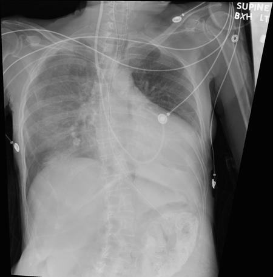
AReverse S sign of Golden(2%)
BLuftsichel sign(12%)
CIncomplete border sign(19%)
DDeep sulcus sign(67%)
Your answerD
Correct answerD. Deep sulcus sign
Vital Concept
The deep sulcus sign indicates pneumothorax on supine chest radiographs, appearing as increased lucency with an inferiorly displaced lateral costal margin due to air accumulating in the lateral subpulmonic pleural recess. This subtle finding is important since pneumothoraces are often inapparent on supine radiographs.
Explanation
Deep sulcus sign
Pertinent finding is that of a deep, radiolucent, right costophrenic angle consistent with the deep sulcus sign. This finding is seen in patients with a pneumothorax when imaged in the supine position. In patients with radiographs taken in the erect position, air rises to the nondependent portion of the pleural spaces, namely the apices. When the chest radiograph is taken with a patient in the supine position, the nondependent portions of the pleural spaces are the anteromedial and anterolateral portions. The deep sulcus sign represents intrapleural air in the anterolateral pleural space.
Incorrect Answers:
A. The reverse S sign of Golden is a “reverse S-shaped” density of the right upper lung, typically with associated volume loss and ipsilateral mediastinal shift. This finding is seen in right upper lobe collapse with an obstructing lesion at the right hilum, classically an endobronchial lesion, although this can be seen with other hilar masses or lymphadenopathy.
B. The Luftsichel sign describes a crescentic lucency which outlines the aortic knob in patients with left upper lobe collapse. The appearance is created by a hyperinflated superior segment of the left lower lobe that is trapped between the collapsed left upper lobe and the aortic arch.
C. The incomplete border sign is seen when a mass has a well-defined border along its inner margin, but an ill-defined (or incomplete) border along its outer margin. This finding is consistent with an extrapulmonary mass. The inner margin is adjacent to aerated lung, which creates the well-defined border, but the outer margin is adjacent to soft tissue, therefore the densities are similar and a border cannot be discerned.
Vital Concept: The deep sulcus sign indicates pneumothorax on supine chest radiographs, appearing as increased lucency with an inferiorly displaced lateral costal margin due to air accumulating in the lateral subpulmonic pleural recess. This subtle finding is important since pneumothoraces are often inapparent on supine radiographs.
Q26
moderate QID 37619
Correct
Which of the following terms is correctly matched with its definition?
AActive error - less apparent failures of organization or design that contributed to the occurrence of errors or allowed them to cause harm to patients(5%)
BAdverse event – an event or situation that did not produce patient injury, but only because of chance(6%)
CNear miss - any injury caused by medical care(0%)
DMistake - reflects failures during attentional behaviors(88%)
ELatent errors - occurring at the point of contact between a physician and patient and typically readily apparent(1%)
Your answerD
Correct answerD. Mistake - reflects failures during attentional behaviors
Explanation
Mistake - reflects failures during attentional behaviors
In some contexts, errors are dichotomized as slips or mistakes, based on the cognitive psychology of task-oriented behavior. Mistakes reflect failures during attentional behaviors—behaviors that require conscious thought, analysis, and planning, as in active problem-solving. Rather than lapses in concentration (as with slips), mistakes typically involve insufficient knowledge, failure to correctly interpret available information, or application of the wrong cognitive rule. Unfortunately, healthcare has typically responded to all errors as if they were mistakes, with remedial education and/or added layers of supervision. In fact, most errors are slips, which are failures of schematic behavior that occur due to fatigue, stress, or emotional distractions, and are prevented through sharply different mechanisms.
Incorrect Answers:
A. An active error occurs at the point of contact between a human and some aspects of a larger system (e.g., a human-machine interface). They are generally readily apparent (e.g., pushing an incorrect button, ignoring a warning light) and almost always involve someone in the front line.
B. An adverse event is any injury caused by medical care.
C. A near miss is an event or situation that did not produce patient injury, but only because of chance. This good fortune might reflect a patient's robust health or a fortuitous, timely intervention.
E. Latent errors refer to less apparent failures of organization or design that contributed to the occurrence of errors or allowed them to cause harm to patients. For instance, whereas the active failure in a particular adverse event may have been a mistake in programming an intravenous pump, a latent error might be that the institution uses multiple different types of infusion pumps, making programming errors more likely. Thus, latent errors are quite literally "accidents waiting to happen."
Q27
moderate QID 22420
Correct
A 75-year-old female patient presents with worsening abdominal pain and fever after undergoing hepatic transarterial chemoembolization (TACE) 10 days prior. Which of the following is the most significant risk factor for the development of this complication?
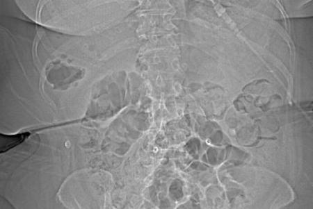
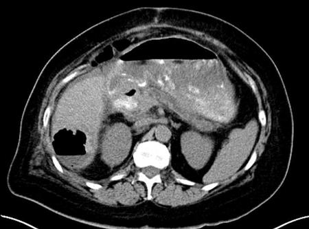
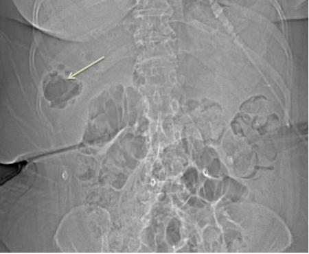
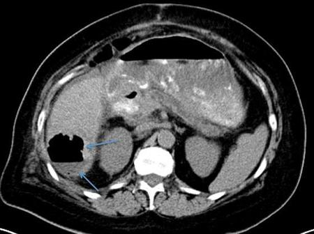
APortal hypertension(7%)
BPrior splenectomy(3%)
CHistory of Crohn’s disease(2%)
DPolycystic liver disease(1%)
EPrior hepatic bilioenterostomy(87%)
Your answerE
Correct answerE. Prior hepatic bilioenterostomy
Vital Concept
Altered biliary anatomy dramatically increases hepatic abscess risk post-TACE. Primary risk factors include bilioenteric anastomosis and incompetent sphincter of Oddi from stenting or sphincterotomy. These create communication between biliary tree and enable biliary colonization by enteric flora, predisposing to ascending infection.
Explanation
Prior hepatic bilioenterostomy
The scout topographic image demonstrates a pocket of gas in the right upper quadrant (green arrow), which is seen as a gas and fluid collection in the right lobe of the liver on the subsequent abdominal CT (blue arrows). In this clinical setting the concern is abscess. In the setting of prior bilioenteric anastomosis, biliary stents, or even endoscopic sphincterotomy, the biliary tract is commonly colonized with enteric flora. When the biliary tree is colonized by these bacteria, there is a high risk of development of hepatic abscess. In one series, six of seven patients with prior bilioenteric anastomosis developed subsequent hepatic abscess. As such, care must be taken in selecting these patients for TACE. If TACE is performed, pre-procedure antibiotic bowel preparation and long-term post-procedure antibiotics with expectant management for the development of hepatic abscess is warranted.
Incorrect Answers:
A, B, C, and D. None of these carry any significantly increased risk of hepatic abscess in the setting of TACE.
Vital Concept: Altered biliary anatomy dramatically increases hepatic abscess risk post-TACE. Primary risk factors include bilioenteric anastomosis and incompetent sphincter of Oddi from stenting or sphincterotomy. These create communication between biliary tree and enable biliary colonization by enteric flora, predisposing to ascending infection.
Q28
easy QID 2677
Correct
A 59-year-old female undergoes mammography 6 months after lumpectomy and breast radiation. Mammography shows increased breast density and skin thickening. Which of the following is the most likely diagnosis?
ARecurrent carcinoma(2%)
BPost-radiation changes(96%)
CInflammatory carcinoma(1%)
DSVC syndrome(0%)
Your answerB
Correct answerB. Post-radiation changes
Vital Concept
The expected changes on mammography after breast conservative surgery and radiation include skin thickening or edema, parenchymal edema, post-operative fluid collection, scar, fat necrosis, and dystrophic calcifications. Skin thickening/edema can be up to 1 cm in thickness and is most pronounced in the first 6 months after treatment.
Explanation
Post-radiation changes
In addition to intended treatment effects, breast radiation also causes damage to superficial small vessels. This small vessel damage is the cause of the skin thickening/edema seen in this case, This finding is most apparent when compared to contralateral or pre-treatment mammogram. The edematous skin can be up to 1 cm in thickness and is most pronounced in the first 6 months post-treatment.
Incorrect Answers:
A., C. Recurrent carcinoma and inflammatory breast cancer is not expected to occur 6 months after lumpectomy and RT.
D. SVC syndrome is caused by mainly direct invasion of tumor into the SVC or by external compression of the central venous system from adjacent pathologies involving the right lungs' lymph nodes or other mediastinal structures leading to stagnation of flow and thrombosis.
Vital Concept: The expected changes on mammography after breast conservative surgery and radiation include skin thickening or edema, parenchymal edema, post-operative fluid collection, scar, fat necrosis, and dystrophic calcifications. Skin thickening/edema can be up to 1 cm in thickness and is most pronounced in the first 6 months after treatment.
Q29
easy QID 43732
Correct
Which of the following is the most likely diagnosis in this 12-year-old patient with mild painless epistaxis, recurrent nasal congestion, and discharge?
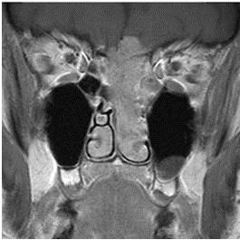
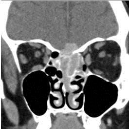
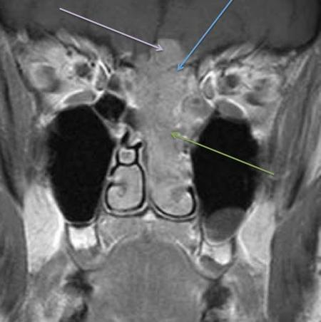
ASquamous cell carcinoma(1%)
BAdenocarcinoma(0%)
CNon-Hodgkin lymphoma(1%)
DAnterior skull base meningioma(1%)
EEsthesioneuroblastoma(97%)
Your answerE
Correct answerE. Esthesioneuroblastoma
Explanation
Esthesioneuroblastoma
The images provided show a primarily solid and avidly enhancing irregular mass centered at the cribriform plate (blue arrow) with extension superiorly into the anterior cranial fossa (purple arrow) and inferiorly into the nasopharynx (green arrow). Based on this appearance, a diagnosis of esthesioneuroblastoma is most likely. Esthesioneuroblastoma represents a malignant neuroectodermal tumor arising from olfactory mucosa in the superior nasal cavity. There is a bimodal distribution in the 2nd and 6th decades, thus both adolescent and middle-aged patients may be affected. The most common presentation is unilateral nasal obstruction and mild epistaxis. Compared to other sinonasal malignancies, the prognosis is very good, with a 5-year survival rate of 75%. When an intracranial extension is present, cysts between the tumor and the overlying brain are often present (not seen here). This may be helpful in distinguishing it from other tumors/masses. The margins of the cysts may enhance.
Incorrect Answers:
A. Sinonasal squamous cell carcinoma more commonly occurs in the maxillary antrum than the nasal cavity and typically does not enhance to the same degree as esthesioneuroblastoma.
B. Sinonasal adenocarcinoma is rare, most often occurring in the setting of occupational exposures to wood and dust. It has a predilection for ethmoid origin with secondary nasal cavity involvement. Enhancement, like squamous cell carcinoma, is less avid, and more heterogeneous than esthesioneuroblastoma.
C. Non-Hodgkin lymphoma may occur in a sinonasal location. It does not enhance to the same degree as esthesioneuroblastoma and rarely breeches the skull base.
D. Meningioma is incorrect. The appearance here is more aggressive than would be expected in a typical meningioma, which may cause hyperostosis in the skull base, but not the aggressive expansion and spread seen here.
Q30
easy QID 44091
Correct
Which of the following is the most likely diagnosis in this incidentally found renal lesion?
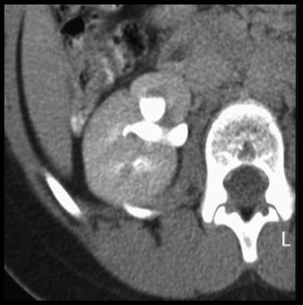
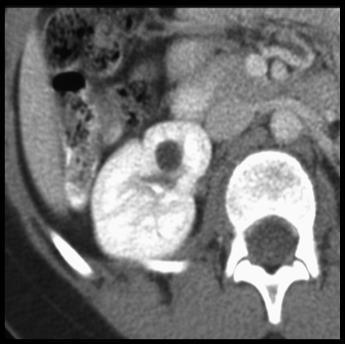
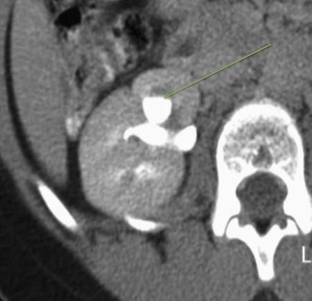
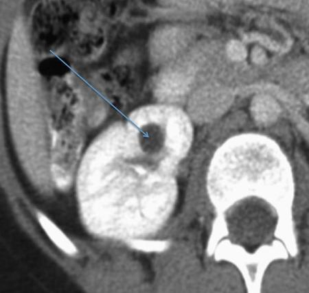
ASimple cyst(1%)
BCalyceal diverticulum(95%)
CRenal cell carcinoma(0%)
DPeripelvic renal cyst(2%)
EParapelvic renal cyst(2%)
Your answerB
Correct answerB. Calyceal diverticulum
Vital Concept
Calyceal diverticulum appears as a cyst-like outpouching on CT that may initially mimic a simple renal cyst. CT urography with contrast enhancement and delayed phases can demonstrate communication with the collecting system, distinguishing it from other cystic lesions.
Explanation
Calyceal diverticulum
The multiphase CT shows a hypodense round lesion in the kidney (blue arrow), which on the excretory phase fills in with contrast (green arrow) with the same attenuation as the adjacent collecting system. This is diagnostic of a calyceal diverticulum.
Incorrect Answers:
A. A simple renal cyst has an identical appearance on non-excretory phase imaging. However, it does not communicate with the collecting system.
C. Renal cell carcinoma is classically an enhancing mass. The degree of increase in attenuation seen here is beyond that of hypervascular contrast enhancement. Papillary cell and chromophobe renal carcinoma are relatively less vascular than the clear cell variant.
D. Peripelvic cysts are very often multiple and represent dilated lymphatics. They may at times be difficult to distinguish from parapelvic cysts. They do not communicate with the collecting system.
E. A parapelvic cyst is a simple renal cyst located adjacent to the collecting system.
Vital Concept: Calyceal diverticulum appears as a cyst-like outpouching on CT that may initially mimic a simple renal cyst. CT urography with contrast enhancement and delayed phases can demonstrate communication with the collecting system, distinguishing it from other cystic lesions.
Q31
moderate QID 4994
Correct
A 37-year-old male presents with history of a motor vehicle accident, right eye proptosis, and right orbital edema. Which of the following is the structure indicated by the arrow?
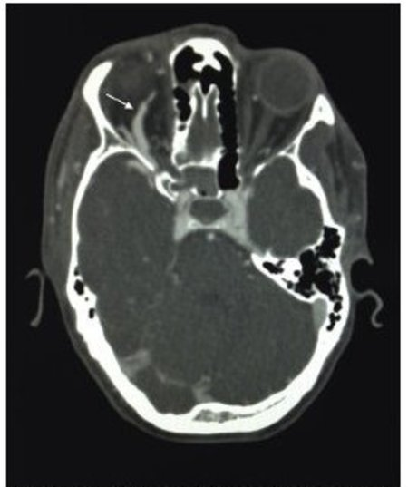
ARight ophthalmic artery(3%)
BRight superior ophthalmic vein(92%)
CRight inferior ophthalmic vein(4%)
DRight superior petrosal sinus(0%)
Your answerB
Correct answerB. Right superior ophthalmic vein
Explanation
Right superior ophthalmic vein
This patient has developed a post-traumatic carotid-cavernous fistula as demonstrated by the early enhancement of the cavernous sinuses bilaterally (at the time of arterial enhancement) and the enlarged right superior ophthalmic vein.
Q32
moderate QID 21566
Correct
A 64-year-old male patient presents to the emergency department (ED) with back and abdominal pain. Which of the following is the most critical secondary finding to communicate?
ASize of false lumen(0%)
BExtension of dissection into left common iliac artery(5%)
CSuperior mesenteric artery (SMA) occlusion(5%)
DPyelonephritis(0%)
ELeft renal infarction(89%)
Your answerE
Correct answerE. Left renal infarction
Explanation
Left renal infarction
When describing aortic dissections, it is important to describe the extent of dissection as well as related end-organ abnormalities. If the dissection flap extends into end arteries, there is the potential for vascular compromise of the perfused organs. In this example, there is a type B aortic dissection (blue arrow). The dissection flap extends into the left renal artery (yellow arrows) with associated hypoperfusion of a segment of the left lower pole, concerning for the development of renal infarction. In some patients, this finding may necessitate intervention.
Incorrect Answers:
A. It is usually of significant clinical importance to be able to reliably define the true and false lumens of an aortic dissection. The true lumen is the portion of the dissection with intima on all sides of the blood column, while the false lumen is the blood column that has extended within the wall of the vessel. Some signs that can help define the false lumen are: Beak sign: A thrombus at the distal aspect of the false lumen forms a beak-shaped acute angle with the wall of the vessel. Volume: The false lumen may be of greater volume (diameter) than the true lumen. Opacification: Frequently the false lumen is less well-opacified than the true lumen, as the contrast column reaching the false lumen is not as dense as within the true lumen. In this case, the size of the false lumen is not critically enlarged. The end-organ perfusion abnormality is likely of more critical importance.
B. Extension of dissection into the left common iliac artery is important to note, especially if intervention is planned, as there is a potential need for left-sided femoral arterial access. However, renal infarction is a critical end-organ perfusion abnormality.
C. The superior mesenteric artery is well-opacified in this case. It is of use to note which lumen perfuses the visceral arteries when evaluating aortic dissections.
D. The perfusion abnormality in the left kidney is most likely related to infarction rather than pyelonephritis.
Q33
hard QID 2936
Incorrect
Which of the following can increase image acquisition time?
ADecreasing repetition time (TR)(2%)
BDecreasing number of excitations (NEX)(4%)
CDecreasing the matrix size from 512 x 512 to 256 x 256(4%)
DDecreasing receiver bandwidth(63%)
EIncreasing the field of view (FOV) at the same matrix size(22%)
Your answerE
Correct answerD. Decreasing receiver bandwidth
Vital Concept
Decreasing bandwidth slows signal readout, lengthening echo spacing and increasing scan time. However, lower bandwidth improves signal-to-noise ratio by reducing noise and allowing more signal averaging during the longer readout period. This creates a fundamental trade-off between scan speed and image quality in MRI acquisition.
Explanation
Decreasing receiver bandwidth
In general, acquisition time for 2D MRI is dependent on TR, NEX, and the number of phase-encoded steps. Multiple other scan parameters can also affect acquisition time, including receiver bandwidth. Decreasing the bandwidth will improve SNR at the expense of increased scan time. Likewise, increased bandwidth should decrease SNR and decrease acquisition time.
Incorrect Answers:
A. Decreasing TR will decrease the acquisition time. In general, acquisition time for 2D MRI is dependent on TR, NEX, and the number of phase-encoded steps. Multiple other scan parameters can also affect acquisition time, including receiver bandwidth. Decreasing the bandwidth will improve SNR at the expense of increased scan time. Likewise, increasing the bandwidth will decrease scan time, but also decrease SNR as noise is present in every sampled bandwidth.
B. Decreasing NEX will proportionally decrease scan time. In general, acquisition time for 2D MRI is dependent on TR, NEX, and the number of phase-encoded steps. Multiple other scan parameters can also affect acquisition time, including receiver bandwidth. Decreasing the bandwidth will improve SNR at the expense of increased scan time.
C. Decreasing the matrix size will decrease the number of phase-encoded steps and decrease scan time. There will be a resultant decrease in spatial resolution, but an increase in SNR. In general, acquisition time for 2D MRI is dependent on TR, NEX, and the number of phase-encoded steps. Multiple other scan parameters can also affect acquisition time, including receiver bandwidth. Decreasing the bandwidth will improve SNR at the expense of increased scan time. Likewise, increasing the bandwidth will decrease scan time, but also decrease SNR as noise is present in every sampled bandwidth.
E. Increasing the FOV at the same matrix size will not affect scan time as there is no change in the number of phase-encoded steps. In general, acquisition time for 2D MRI is dependent on TR, NEX, and the number of phase-encoded steps. Multiple other scan parameters can also affect acquisition time, including receiver bandwidth. Decreasing the bandwidth will increase the SNR at the expense of increased scan time. Likewise, increasing the bandwidth will decrease scan time and decrease SNR.
Vital Concept: Decreasing bandwidth slows signal readout, lengthening echo spacing and increasing scan time. However, lower bandwidth improves signal-to-noise ratio by reducing noise and allowing more signal averaging during the longer readout period. This creates a fundamental trade-off between scan speed and image quality in MRI acquisition.
Q34
QID 18053
Correct
Which of the following is the most likely explanation for the liver abnormality in this patient, based on the imaging below?
AIatrogenic(5%)
BSmall bowel wall ischemia(9%)
CGastric wall ischemia(84%)
DColonic wall ischemia(2%)
Your answerC
Correct answerC. Gastric wall ischemia
Vital Concept
Gastric pneumatosis appears as intramural air pockets within the gastric wall on CT without wall thickening or inflammatory changes. This finding indicates mucosal barrier disruption from ischemia or other non-infectious causes. It must be differentiated from emphysematous gastritis, which shows wall thickening and systemic toxicity.
Explanation
Gastric wall ischemia
Looking closely at the gastric wall, notice the gastric wall gas that is anti-dependent, denoting intramural gas rather than intraluminal gas. So, the most likely explanation of the liver abnormality in this case, which is portal venous gas, is gastric emphysema.
Gastric emphysema can occur secondary to a number of causes, the most common of which is emphysematous gastritis, an infectious disease of gas-forming bacteria. The stomach is the least common gastrointestinal organ to develop intramural gas. Other causes of gastric emphysema include ischemia, caustic ingestion, perforated gastric ulcer, trauma, iatrogenic distention, and dissection of pulmonary gas as in pneumothorax.
Incorrect Answers:
A. Iatrogenic gastric or bowel dilation may be associated with portal venous gas; however, this is not as common as gastric emphysema, which is the correct diagnosis in this case.
B. Small bowel ischemia and necrosis are the most common causes of portal venous gas, however, this is not the correct answer to this case.
D. Colonic wall ischemia, necrotizing colorectal cancer, and colonic inflammatory bowel disease (IBD) are all causes of portal venous gas, however, this is not the correct answer to this case.
Vital Concept: Gastric pneumatosis appears as intramural air pockets within the gastric wall on CT without wall thickening or inflammatory changes. This finding indicates mucosal barrier disruption from ischemia or other non-infectious causes. It must be differentiated from emphysematous gastritis, which shows wall thickening and systemic toxicity.
Q35
easy QID 21117
Correct
A 43-year-old female patient presents with dyspareunia and vaginal bleeding. Pelvic magnetic resonance image (MRI) is ordered and shown below. Which of the following is the most likely diagnosis?
AEndometrial carcinoma(2%)
BGartner’s duct cyst(1%)
CCervical fibroid(2%)
DCervical carcinoma(95%)
ENabothian cyst(0%)
Your answerD
Correct answerD. Cervical carcinoma
Explanation
Cervical carcinoma
Pelvic magnetic resonance imaging (MRI) demonstrates a large, irregularly shaped, T2 hyperintense mass at the cervix (yellow arrows) extending to the upper third of the vagina (blue arrows). There is peripheral enhancement on the post-contrast T1 images, consistent with some degree of necrosis, which is to be expected for a mass of this size. These findings are concerning for cervical adenocarcinoma.
On pelvic MR imaging, T2 weighted images are the most useful sequence for delineation of extent of cervical cancer. Cervical carcinoma tends to be a T2 hyperintense mass superimposed on a background of T2 hypointense cervical stroma (some normal cervical stroma is seen on the top left sagittal T2 weighted image – green arrow). The surrounding cervical stromal ring (red arrow) is T2 hypointense, and any disruption of this ring by hyperintense tumor raises the concern for extension outside the cervix and into the parametrium.
Incorrect Answers:
A. Endometrial carcinoma typically appears as abnormal thickening of the endometrium with an associated mass-like hypoenhancing lesion within the endometrial cavity (when compared to surrounding uterine wall and cervix). Endometrial carcinoma is similar in intensity to slightly hypointense to normal endometrium. On T2 weighted images, it is important to evaluate the junctional zone to determine the degree of invasion.
B. Gartner’s duct cysts are remnants of the Wolffian duct and appear as round cystic lesions along the anterolateral aspect of the vaginal wall. Frequently, they appear with low signal intensity on T1WI, high intensity on T2WI, and do not enhance.
C. Fibroids, or leiomyomas, are frequently seen as hypointense mass lesions of the uterine wall on T2 weighted images. They may be submucosal, intramural, or subserosal in location. When submucosal or subserosal, they may be pedunculated or sessile in appearance. They may degenerate via multiple mechanisms including hemorrhagic, calcific, hyaline, myxoid, or carneous mechanisms. Degenerated or degenerating leiomyomas may be indistinguishable from leiomyosarcomas.
E. Nabothian cysts are cystic dilatations of endocervical glands, often related to overgrowth of squamous epithelium. They are usually located at the periphery of the cervix and typically demonstrate T2 hyperintensity, T1 hypointensity, and do not enhance. They are typically benign findings requiring no further workup.
Q36
moderate QID 3085
Correct
A 33-year-old male with melanoma of the right calf, status post-excisional biopsy, presents for lymphoscintigraphy. He is injected at the biopsy site, and the images shown are taken. Several focal areas of uptake are noted proximal to the injection site on subsequent planar imaging (shown below). Which of the following do these most likely represent?
AContamination(1%)
BMetastastic, but not benign, lymph nodes(8%)
CLymph nodes draining the biopsy site(89%)
DAdditional sites of melanoma(1%)
EPost-surgical lymphoceles(1%)
Your answerC
Correct answerC. Lymph nodes draining the biopsy site
Vital Concept
Tc-99m sulfur colloid injected intradermally around melanoma lesion enables identification of sentinel lymph nodes. Dynamic imaging at 30 to 60 minutes maps lymphatic drainage patterns that are used for surgical planning.
Explanation
Lymph nodes draining the biopsy site
Lymphoscintigraphy is utilized to identify sentinel lymph nodes and lymphatic drainage pathways to guide lymph node dissection. Images demonstrate focal uptake within lymph nodes draining the excisional biopsy site within the popliteal fossa and right inguinal region. The radiopharmaceutical typically injected is Tc-99m sulfur colloid.
Incorrect Answers:
A. Contamination would localize external to the patient, not within the popliteal fossa and inguinal region as demonstrated in the imaging.
B. While melanoma is a highly aggressive tumor when it metastasizes, the radiotracer used in lymphoscintigraphy is not a marker for metastatic nodes for melanoma only. It will show activity in any nodes in the drainage pathway.
D. The radiopharmaceutical used for lymphoscintigraphy, Tc-99m sulfur colloid has no partiality for normal versus metastatic lymph nodes.
E. Numerous foci of radiotracer activity are identified distant from the surgical site.
Vital Concept: Tc-99m sulfur colloid injected intradermally around melanoma lesion enables identification of sentinel lymph nodes. Dynamic imaging at 30 to 60 minutes maps lymphatic drainage patterns that are used for surgical planning.
Q37
easy QID 47439
Correct
Which of the following is the most likely diagnosis in this 58-year-old male with worsening right flank pain?
The computed tomography (CT) demonstrates a large staghorn calculus (yellow arrow), hydronephrosis with atrophic parenchyma (blue arrow), and perinephric stranding (green arrow). These are imaging findings of xanthogranulomatous pyelonephritis (XGP). XGP is the result of chronic renal infection in the setting of longstanding urinary calculus obstruction. Pathologically, the process is characterized by fibrofatty replacement by lipid-laden macrophages. Often, treatment requires a combination of antibiotics and nephrectomy.
Incorrect Answers:
A. Renal angiomyolipomas are benign renal tumors composed of vascular smooth muscle and fat elements. They appear as masses containing gross (macroscopic) fat, and when large can spontaneously hemorrhage.
B. Although the classical appearance of renal cell carcinoma is an enhancing renal mass, it can have variable cystic and solid components, which may simulate XGP. The constellation of obstructing stone, surrounding inflammation, and parenchymal atrophy would not be expected.
C. A pus-filled collecting system in the setting of acute pyelonephritis can simulate XGP. However, in acute pyelonephritis, one would not expect to see the marked degree of parenchymal atrophy that is present here, but rather parenchymal swelling and heterogeneous enhancement (striated nephrograms).
E. Primary renal lymphoma may appear as a focal solitary or diffuse infiltrative mass, often bilateral, with perinephric adenopathy.
A 40-year-old patient with altered mental status is brought to the emergency department. A review of the chart reveals a past medical history which is significant for alcohol use disorder. Vital signs include a temperature of 101.5°F (38.6°C), a heart rate of 115, a blood pressure of 105/80, and a respiratory rate of 25. The patient is coughing continuously and is unresponsive. Breath sounds are diminished over the mid to lower right lung. The admission chest x-ray is shown below. Which of the following is the most likely diagnosis?
APulmonary infarction(1%)
BPulmonary embolism(1%)
CAspiration pneumonia(27%)
DPulmonary abscess(72%)
Your answerD
Correct answerD. Pulmonary abscess
Vital Concept
Lung abscesses most commonly develop from aspiration pneumonia. These lesions are polymicrobial and are usually caused by anaerobes. A condition predisposing to aspiration, such as stroke or alcohol use disorder, is often present.
Explanation
Pulmonary abscess
There is a rounded lucent region with surrounding consolidation in the right lung. This cavity with a visible air-fluid level most likely represents a lung abscess. The most common cause of lung abscesses is aspiration pneumonia. Initially, pneumonitis arises from aspirated secretions and refluxed stomach contents. This results in necrosis of lung parenchyma, which can then progress to a lung abscess or an empyema over the next 1-2 weeks. Often, comorbidities, such as alcohol use disorder or stroke, predisposes an individual to aspirate.
Lung abscesses are typically polymicrobial infections, most commonly consisting of microaerophilic Streptococci and anaerobes. The most common anaerobes include Peptostreptococcus, Prevotella, Bacteroides (usually not B. fragilis), and Fusobacterium. Less commonly, other anaerobes and aerobes can cause monomicrobial lung abscesses. The most common causes of lung abscesses in immunocompromised individuals are Pseudomonas aeruginosa, Nocardia, and fungi.
Patients with lung abscesses often present with fevers and upper respiratory symptoms. Night sweats and weight loss are common. Treatment is empiric, as specimens are not usually obtained from abscesses. Most commonly, a carbapenem antibiotic is chosen for anaerobic coverage. This has the advantage over clindamycin of a lower risk of Clostridiodes difficile colitis.
Incorrect Answers:
A. The appearance of an air-fluid level makes an abscess most likely.
B. A lung cavitation of this size would not be expected of a pulmonary embolism.
C. Although aspiration pneumonia may have preceded the development of this lung abscess, the chest X-ray demonstrates a cavity with an air-fluid level, which is highly suspicious for abscess in the clinical context.
Vital Concept: Lung abscesses most commonly develop from aspiration pneumonia. These lesions are polymicrobial and are usually caused by anaerobes. A condition predisposing to aspiration, such as stroke or alcohol use disorder, is often present.
Q39
easy QID 4940
Correct
A 22-year-old female presents with a left upper outer quadrant palpable breast mass. Ultrasound evaluation of the palpable area followed by a mammogram with representative view. Which of the following is the most appropriate BI-RADS classification for this finding?
ABI-RADS 1(0%)
BBI-RADS 2(95%)
CBI-RADS 3(4%)
DBI-RADS 4(1%)
Your answerB
Correct answerB. BI-RADS 2
Vital Concept
Breast hamartomas, also known as fibroadenolipomas, are benign breast lesions characterized by a "breast within a breast" appearance on mammogram. They appear as a well-circumscribed round or oval mass surrounded by a thin capsule on mammogram and composed of both fat and soft-tissue internal densities.
Explanation
BI-RADS 2
Standard mammographic views adequately demonstrate the mixed internal fat/glandular attenuation and circumscribed margins, while ultrasound confirms mixed echogenicity and compressible nature. Breast hamartoma is the most likely diagnosis given the pathognomonic "breast within a breast" appearance with mixed fat and fibroglandular tissue within a thin pseudocapsule, excluding lipoma (pure fat) and fibroadenoma (lacks fat component). BI-RADS 2 is most appropriate for this finding.
Incorrect Answers:
A. BI-RADS 1 mainly defines negative mammography findings.
C. BI-RADS 3 is used for lesions that are probably benign. Hamartoma is a benign lesion. No need to follow up.
D. BI-RADS 4 lesions have 2-94% probability of malignancy. Hamartoma is a benign lesion
Vital Concept: Breast hamartomas, also known as fibroadenolipomas, are benign breast lesions characterized by a "breast within a breast" appearance on mammogram. They appear as a well-circumscribed round or oval mass surrounded by a thin capsule on mammogram and composed of both fat and soft-tissue internal densities.
Q40
QID 5059
Correct
A 21-year-old male with a history of intravenous drug abuse (IVDA) presents with shortness of breath. The following computed tomography (CT) was obtained. Which of the following would be the main consideration?
Pneumocystis jiroveci pneumonia should be considered in any patient at high risk for HIV/AIDS with diffuse pulmonary ground glass on CT.
Explanation
Pneumocystis jiroveci pneumonia (PJP)
The findings in this case are nonspecific, but given the history of IVDA, one must have a high index of suspicion of human immunodeficiency virus (HIV) and Pneumocystis infection given the incidence.
Acquired immunodeficiency syndrome (AIDS)-related PJP can be rapidly fatal and therefore should be the diagnosis to exclude. The main findings are extensive ground glass opacity with thin-walled cyst formation, as seen here in the upper lobes. Cysts are more commonly seen in PJP related to AIDS, versus other patients with immunosuppression. This is the most typical presentation of PJP.
Incorrect Answers:
A. Hypersensitivity pneumonitis can have similar findings but is less common and should not be considered ahead of PJP in this context.
C. Nonspecific interstitial pneumonia (NSIP) is a term which encompasses many conditions and is also manifested by ground glass opacity. Cyst formation is less common.
D. Pulmonary alveolar proteinosis (PAP) is also uncommon and typically has more lymphatic engorgement resulting in a "crazy paving" pattern.
Vital Concept: Pneumocystis jiroveci pneumonia should be considered in any patient at high risk for HIV/AIDS with diffuse pulmonary ground glass on CT.
Q41
hard QID 43907
Correct
A 52-year-old male patient with a history of neck pain and extremity weakness undergoes the MRI shown. Which of the following is the most likely diagnosis?
AEpendymoma(76%)
BAstrocytoma(10%)
CHemangioblastoma(11%)
DAbscess(0%)
EMetastatic disease(2%)
Your answerA
Correct answerA. Ependymoma
Explanation
Ependymoma
The sagittal and axial T1-weighted sequences show an intradural intramedullary mass in the cervical spinal cord (red arrow). Note the T1 hyperintense focus (last image) consistent with hemorrhage. The T2 sequences again show the massive cord expansion and signal abnormality (green arrow), and further reveal the heterogeneous nature of the mass, with cystic spaces seen superiorly (blue arrow). Given the patient’s age, presentation, and the imaging findings, a diagnosis of ependymoma is most likely. Spinal ependymomas are the most common spinal cord tumor overall and are seen in both adult and pediatric populations. In adults, they comprise 60% of all glial spinal cord tumors. They arise from ependymal cells lining the central canal or cell rests along the filum. Peak incidence is in the fourth decade, with 39 years being the mean age at presentation. Males are more commonly affected than females. MR imaging features include an unencapsulated but well-circumscribed mass, with cysts present in many cases, as well as associated syringohydromyelia in up to 50% of cases. They have an average length of four vertebral body segments.
Incorrect Answers:
B. Astrocytoma is the most common spinal cord tumor in children. In contrast to ependymomas, they are more often ill-defined and eccentrically located. Hemorrhage is uncommon, and patchy irregular contrast enhancement is most often present.
C. Hemangioblastoma is a less common spinal neoplasm. Their most common location is the thoracic cord (50%). The majority of hemangioblastomas have an eccentric intramedullary component as well as an exophytic component. Only 25% percent are entirely intramedullary.
D. The clinical features are not that of infection. Intramedullary abscesses are seen most often following instrumentation. Although they can have almost any appearance, like those elsewhere in the body, classical features such as rim enhancement, restricted diffusion, and adjacent vertebral or disc abnormalities are commonly encountered.
E. Intramedullary spinal metastases are rare, representing only 8.5% of central nervous system metastases and 5% of intramedullary lesions. Although their appearance may vary based on the primary tumor, they tend to not be this large, and to have more homogeneous signal and enhancement characteristics.
Q42
moderate QID 41459
Correct
A 26-year-old x-ray technologist is pregnant and inquiries about radiation dose to their fetus. The technologist understands that by wearing protective equipment, the dose to their fetus is so low as to be almost negligible. In utero exposure to ionizing radiation at any dose is associated with an increased risk of which of the following?
AMiscarriage(10%)
BMicrocephaly(1%)
CChildhood malignancy(84%)
DDevelopmental delay(5%)
EReduced stature(0%)
Your answerC
Correct answerC. Childhood malignancy
Explanation
Childhood malignancy
In utero exposure to ionizing radiation at any dose is associated with an increased risk of childhood malignancy, especially leukemia. Although lifetime cancer risk is unknown, there is increasing evidence of elevated risk, particularly for solid tumors. Noncancer health effects are not observed when the fetal radiation exposure occurs below a threshold dose of 0.05 Gy (5 rad) at any stage of gestation. In clinical practice, the threshold dose for the human embryo is probably closer to 0.10 to 0.20 Gy (10 to 20 rad).
Incorrect Answers:
A. After 16 weeks gestational age, when organogenesis and the early fetal period have already occurred, the threshold dose for non-cancer effects increases to approximately 0.50 to 0.70 Gy (50 to 70 rad), including the risk of miscarriage.
B. During the preimplantation period (blastogenesis), exposure to a radiation dose greater than 0.1 Gy (10 rad) is associated with a risk of failure to implant, representing an “all or none” phenomenon of early embryonic development. If the embryo survives, substantial non-cancer health effects are unlikely, regardless of the radiation dose. Intellectual disability and growth restriction, including microcephaly, are the most common fetal malformations after significant radiation exposure during organogenesis and the early fetal period.
D. Studies of Japanese atomic bomb survivors have shown that a threshold dose of 0.3 Gy (30 rad) at 8 - 15 weeks after conception is associated with an increased risk of severe intellectual disability. IQ data in this cohort fits a linear dose-response model, with an average IQ loss of approximately 25 to 31 points per 1 Gy beyond 0.1 Gy.
E. Atomic bomb survivors who received in utero doses greater than 1 Gy (100 rad) had a permanent 3-4% reduction in height at 18 years of age.
Q43
moderate QID 37640
Correct
Which of the following is the half-life of the radionuclide used in this routine study?
A8 days(12%)
B6 hr(78%)
C78.3 hr(3%)
D73.1 hr(3%)
E2.8 days(4%)
Your answerB
Correct answerB. 6 hr
Explanation
6 hr
The exam shown is a 99mTc sestamibi scan performed in this patient with hyperparathyroidism. Subtraction images shows a focus of uptake in the left thyroid fossa (image B). Parathyroid carcinoma was revealed at the time of surgery. The half-life of 99mTc is 6 hr.
Incorrect Answers:
A. 8 days is the half-life of I-131. I-131 is not used for routine thyroid scans because of its poor image quality and high radiation dosimetry. The high-energy beta emissions of I-131 make it very useful for radiotherapy of Graves’ disease, toxic nodules, and thyroid cancer. C. 78.3 hr is the half-life of gallium-67.
D. 73.1 hr is the half-life of thallium-201.
E. 2.8 days is the half-life of indium-111.
Q44
easy QID 2828
Correct
A 14-year-old male had a CT and MRI to evaluate for chronic headaches. Which of the following is the most likely diagnosis?
Adamantinomatous craniopharyngioma usually presents as a solid/cystic sellar mass with calcification and is most common in children.
Explanation
Adamantinomatous craniopharyngioma
Coronal T2 image shows a T2 hyperintense cystic lesion with T2 hyperintense/heterogeneous solid component arising from the sella. Axial CT depicts associated coarse calcification. This finding is most compatible with craniopharyngioma. There are two types of craniopharyngioma: adamantinomatous and papillary. The adamantinomatous type is more common in children, more likely to present with calcification and is therefore the most likely diagnosis of those given.
Incorrect Answers:
A. A subarachnoid bleed may occur in this region, but the presence of a solid/cystic sellar mass is more compatible with an alternative diagnosis.
B. Though papillary craniopharyngioma can present with calcification, it is more likely in adult patients.
C. Pott's puffy tumor relates to chronic frontal sinusitis, not a solid/cystic sellar mass.
Vital Concept: Adamantinomatous craniopharyngioma usually presents as a solid/cystic sellar mass with calcification and is most common in children.
Q45
easy QID 3063
Correct
This is the case of an adult male with history of hematospermia; transrectal ultrasound images are shown below. Which of the following is the diagnosis?
ANormal study(1%)
BProstatic calcification(2%)
CSeminal vesicle calculi(92%)
DCarcinoma prostate(0%)
EUtricle cyst of the prostate(3%)
Your answerC
Correct answerC. Seminal vesicle calculi
Vital Concept
Seminal vesicle calcifications appear as echogenic material with posterior acoustic shadowing on transrectal ultrasound and can be a cause of hematospermia. Associations include diabetes, hyperparathyroidism and chronic infection/inflammation.
Explanation
Seminal vesicle calculi
The first image shows a sagittal section through the seminal vesicles with bilateral echogenic material in both seminal vesicles; coronal images best depict posterior shadowing associated with these structures. These findings are most compatible with seminal vesicle calculi. This is the reason for the hematospermia in this patient. Seminal vesicle calculi are an unusual finding and have been linked to diabetes, hyperparathyroidism and chronic infection/inflammation.
Incorrect Answers:
A. This is not a normal study.
B. The calculi lie within the seminal vesicles and not the prostate.
D. There is no evidence of prostate mass lesions.
E. No cystic lesions are seen in the prostate.
Vital Concept: Seminal vesicle calcifications appear as echogenic material with posterior acoustic shadowing on transrectal ultrasound and can be a cause of hematospermia. Associations include diabetes, hyperparathyroidism and chronic infection/inflammation.
Q46
hard QID 2924
Incorrect
Which of the following major advantages does a three-point Dixon technique offer over a two-point Dixon technique in MRI?
ADecreased scan time(11%)
BHigher spatial resolution(24%)
CDecreased field inhomogeneity errors(53%)
DBetter temporal resolution(10%)
Your answerB
Correct answerC. Decreased field inhomogeneity errors
Vital Concept
Different implementations of the Dixon technique have been used to quantify fat and water in various parts of the human body. The advantage of the 3-point Dixon technique is decreased field inhomogeneity errors.
Explanation
Decreased field inhomogeneity errors
The primary advantage is that 3-point Dixon accounts for B0 field inhomogeneities while 2-point Dixon does not. A 2-point Dixon is susceptible to water-fat ambiguity artifacts where regions can swap between water and fat assignment due to phase wrapping from field inhomogeneities. Three echoes/points provide sufficient data to solve for three unknowns: water signal, fat signal, and local field map. Acquisitions obtained at these three echoes/points enable more robust separation even in challenging areas with significant field inhomogeneities, while 2-point methods lack this capability. The third echo enables the algorithm to simultaneously solve for water signal, fat signal, and local field homogeneities, resulting in more reliable water/fat definition/separation.
Incorrect Answers:
A. A 3-point Dixon requires an additional scan, resulting in increased scan time.
B. Spatial resolution is not affected.
D. Temporal resolution is not affected.
Vital Concept: Different implementations of the Dixon technique have been used to quantify fat and water in various parts of the human body. The advantage of the 3-point Dixon technique is decreased field inhomogeneity errors.
Q47
easy QID 4953
Correct
An 84-year-old female presents with acute onset shortness of breath and chest heaviness. A chest CT angiogram is performed. The most likely diagnosis in this patient is:
Aacute pericarditis.(1%)
Bacute pulmonary embolism.(2%)
Caortic root dissection.(3%)
Dcoronary artery aneurysm.(93%)
Eleft ventricular failure.(1%)
Your answerD
Correct answerD. coronary artery aneurysm.
Vital Concept
Coronary artery aneurysms are defined as ≥50% diameter increase. The most commonly etiologies are atherosclerotic (in the US) and Kawasaki disease (worldwide). Size >8mm indicates higher thrombotic risk, while hemopericardium suggests rupture requiring emergent intervention.
Explanation
coronary artery aneurysm.
Chest CTA in this image shows an enlarged proximal right coronary artery root with circumferential thrombus/eccentric atheromatous plaque.
Incorrect Answers:
A. Imaging findings of acute pericarditis would include a thickened, enhancing pericardium and possibly the presence of a pericardial effusion. In this case, the pericardium is thin and normal-appearing.
B. Though the patient history may suggest acute pulmonary embolism, prompting the chest CTA, there is no pulmonary artery filling defect seen on the image provided.
C. The partially-imaged aortic root is normal in this case; likewise, the descending thoracic aorta is normal.
E. Left ventricular failure (which may be related to infarction, ventricular hypertrophy, dilated cardiomyopathy, etc.) is characterized by pulmonary congestion and edema. Since lung windows were not provided, this answer choice can be eliminated.
Vital Concept: Coronary artery aneurysms are defined as ≥50% diameter increase. The most commonly etiologies are atherosclerotic (in the US) and Kawasaki disease (worldwide). Size >8mm indicates higher thrombotic risk, while hemopericardium suggests rupture requiring emergent intervention.
Q48
moderate QID 37634
Incorrect
A 30-year-old patient presents with relatively rapid onset of palpitations, insomnia, anxiety, and a painful and swollen neck. They undergo an I-123 thyroid scan, which is shown below. Which of the following would a provider likely find if they took their medical history?
The I-123 thyroid scan demonstrates markedly diminished uptake in the thyroid bed with physiologic uptake in the salivary glands. These findings along with clinical history are indicative of a diagnosis of the thyrotoxic case of subacute thyroiditis, a condition characterized by neck pain, fever, and an enlarged and tender gland. Subacute thyroiditis is presumed to be caused by a viral infection and is usually preceded by an upper respiratory tract infection. The lack of radiotracer uptake is due to the inability of the thyroid to transport or organify iodine. This is the most common reason for thyrotoxicosis associated with a decreased radioactive iodine uptake.
Incorrect Answers:
A and E. Weight gain and decreased appetite are signs and symptoms of hypothyroidism, which this patient's clinical presentation is not compatible with. Though hypothyroidism may show decreased radiotracer uptake by the gland, this is often a diagnosis made clinically and biochemically.
C. Exogenous thyroid hormone administration, whether for treatment of hypothyroidism or in an attempt to lose weight, would cause a similar thyroid scan appearance, with diffusely decreased uptake of I-123. The symptoms would be different, however, without the painful and swollen gland and acute onset.
D. Treated thyroid cancer is imaged with 1-131, not I-123. The goal of imaging is to look for residual thyroid tissue in the thyroidectomy bed, as well as to perform a whole-body scan for sites of metastasis. The imaging appearance depends on the stage of therapy. In the recent post-therapy period, thyroid scanning reveals intense uptake in the thyroid bed and will appear as a star artifact. In the surveillance period, if successfully treated, there should be no uptake in the thyroidectomy bed.
Q49
easy QID 21563
Correct
A 73-year-old male patient presents with back pain. Assuming the abnormality begins at the imaged level, which of the following is the most appropriate treatment?
AEndovascular fenestration(1%)
BEndovascular stent graft placement(5%)
CSurgical graft placement(0%)
DSurgical bypass(0%)
EMedical management(93%)
Your answerE
Correct answerE. Medical management
Explanation
Medical management
The given image depicts a dissection involving the descending thoracic aorta (red arrow).
Assuming the abnormality begins at the imaged level, this may be classified as a Stanford type B dissection. There are classically two classification schemes for aortic dissection, the Stanford and the DeBakey systems. The most commonly used and most clinically useful scheme is the Stanford system. In this system, any dissection involving the ascending aorta or arch proximal to the left subclavian artery is classified as a type A. Any dissection originating distal to the left subclavian artery is classified as type B.
Dissections originating proximal to the left subclavian artery typically undergo some sort of emergent intervention, either by endovascular or surgical techniques. Dissections originating distal to the left subclavian artery are typically managed with medical therapies such as hypertension and cardiac rate control, unless there is end-organ ischemia or evidence of rupture or impending rupture.
Incorrect Answers:
A. Endovascular fenestration is a way to allow for equalization of blood pressures within the true and false lumens such that it prevents propagation of the dissection and may help the dissection to decrease in size. However, it is infrequently used today.
B, C. Endovascular or surgical grafting would be appropriate in the setting of a type A dissection, or in the case of rupture or impending rupture of a type B dissection.
D. Surgical bypass is not frequently performed for the treatment of aortic dissection.
Q50
hard QID 43726
Correct
A patient presents with proptosis and diplopia. Which of the following is the most common location for the process shown below?
AFrontal sinus(53%)
BEthmoid sinus(8%)
CSphenoid sinus(24%)
DMaxillary sinus(14%)
Your answerA
Correct answerA. Frontal sinus
Explanation
Frontal sinus
The non-contrast T1-weighted MR shows a hyperintense opacified expanded left frontal sinus (red arrow) with smooth bony remodeling of walls (blue arrows), which, along with the clinical symptoms, is suggestive of sinonasal mucocele.
Note that there is a smaller, low-signal (fluid) mucocele on the right (green arrow). Following contrast administration, there is thin peripheral enhancement (orange arrows) of both lesions, without a solid enhancing component.
Mucoceles are the most common expansile lesion of paranasal sinuses. They may be seen in any age group, and occur secondary to obstruction from inflammation, trauma, functional endoscopic sinus surgery, or any space-occupying sinonasal mass. They are characterized by an opacified expanded sinus with thin peripheral enhancement and smooth remodeling of walls.
Incorrect Answers:
B. C. D. The frontal sinus is particularly prone to developing mucoceles, and up to two-thirds occur there, followed by the ethmoid (25%), maxillary (5 to 10%), and sphenoid sinuses (2 to 5%). They are not found in the nasal cavity. As in this case, a frontal mucocele may extend into the orbit and present as a mass.
The MR signal characteristics vary based on the fluid and protein content of the mass. High fluid content of mucus yields low T1 signal, whereas protein content results in a high T1 signal.
Q51
moderate QID 37566
Incorrect
A 44-year-old female patient arrives at the breast imaging center with left breast pain. A mammogram is performed, followed by focused ultrasound. Which of the following is the most likely diagnosis?
Extracapsular silicone implant rupture appears on mammography as dense silicone material in breast tissue outside the fibrous capsule, and on ultrasound shows the characteristic "snowstorm" appearance with dense shadowing caused by silicone deposition in breast parenchyma, lymph nodes, or systemic organs.
Explanation
Extracapsular silicone implant rupture
Following breast augmentation, the body forms a fibrous capsule around the prosthesis, which is referred to as the external capsule. This is in addition to the capsule of the implant itself, or the internal capsule. The majority of implant ruptures are intracapsular, in which the internal implant capsule breaks down, but the implant substance (silicone or saline) remains confined by the external fibrous capsule.
Here, the mediolateral oblique (MLO) mammogram shows that there is no gross deformity of the implant (blue arrows). However, there is high-density material beyond the implant's capsule (the internal capsule – yellow arrow). The ultrasound demonstrates echogenic debris compatible with free silicone mixed within the surrounding breast tissues (green arrow). This is the “snowstorm” sign, which has been shown to be the most sensitive and specific sign at ultrasound for extracapsular implant rupture.
Incorrect Answers:
A. Neither the mammogram nor the ultrasound are normal exams.
B. Intracapsular silicone rupture would not show high-density material outside of the implant on the mammogram or echogenic debris mixed with the breast tissue at ultrasound.
D. E. Saline implants are also frequently seen in practice. The key difference here is that saline does not have a high-density appearance on mammography and an echogenic appearance on ultrasound.
Vital Concept: Extracapsular silicone implant rupture appears on mammography as dense silicone material in breast tissue outside the fibrous capsule, and on ultrasound shows the characteristic "snowstorm" appearance with dense shadowing caused by silicone deposition in breast parenchyma, lymph nodes, or systemic organs.
Q52
hard QID 48113
Correct
Which of the following correctly states the classification of the fracture shown below?
AType I stable(1%)
BType II stable(2%)
CType II unstable(6%)
DType III(76%)
EType IV(15%)
Your answerD
Correct answerD. Type III
Vital Concept
Type III odontoid fractures extend into the C2 vertebral body, have better healing rates than Type II fractures, and can typically be managed with halo immobilization rather than surgery.
Explanation
Type III
Type III odontoid fractures are divided into two categories. Fractures with lateral mass comminution > 50% or with secondary fractures lines into the pars interarticularis or vertebral body were classified as complex fractures. All other Type III fractures were classified as simple fractures. Inclusion criteria for the study were complex Type III fractures that were treated nonoperatively in either a hard collar orthosis (Aspen Collar®) or halo vest. Patients that underwent early surgery without a trial of nonoperative management or those lost to follow-up were not included in this study.
The images show a fracture of the dens, which encompasses the body of C2 (red arrow) and the lateral masses (blue arrows). This is diagnostic of a type III dens fracture; if not complex and if mechanism is not high energy, type III dens fractures tend to be stable fractures amenable to conservative treatment as a first line. The C1-2 complex allows for far more motion than any other single level in the cervical spine. This motion is predominantly rotational, since translational motion at C1- C2 is limited by the strong transverse ligament.
Incorrect Answers:
A. Type I dens fractures are rare. They involve the upper part of the odontoid peg, superior to the transverse band of the cruciform ligament. As such they are usually considered stable.
B. Type II dens fractures are the most common. They occur at the base of the odontoid and below the level of the transverse band of the cruciform ligament and at the level of the transverse ligament. As such, they are considered unstable. They carry a high risk of non-union.
C. Type 2 fractures are typically unstable.
E. There is no such thing as a type 4 fracture.
Vital Concept: Type III odontoid fractures extend into the C2 vertebral body, have better healing rates than Type II fractures, and can typically be managed with halo immobilization rather than surgery.
Q53
moderate QID 38092
Correct
Given the 4-receiver operating characteristic (ROC) curves shown, which one demonstrates the most ideal performance?
AA(90%)
BB(5%)
CC(1%)
DD(3%)
EThere is not enough information to answer the question(1%)
Your answerA
Correct answerA. A
Explanation
A
The ROC curve is a statistical relationship used frequently in radiology, particularly with regard to limits of detection and screening. More broadly, the curve can be used to find the point at which the trade-off between sensitivity and specificity is optimal given the modality, disease, and patient population in question.
Incorrect Answers:
B, C. One can generate an ROC curve between these two extremes by determining the cut-off points for sensitivity and specificity given the modality, disease, and patient population in question.
D. A worthless diagnostic test would be no better than chance, which graphically appears as a straight line through the origin.
Q54
easy QID 22631
Correct
A 14-year-old male patient presents for evaluation of painful left scrotal swelling. Transverse image from subsequent ultrasound shown. Which of the following is the diagnosis?
ASeminoma(1%)
BVaricocele(0%)
CHydrocele(0%)
DTesticular torsion(3%)
EEpididymo-orchitis(96%)
Your answerE
Correct answerE. Epididymo-orchitis
Vital Concept
Epididymo-orchitis shows enlarged epididymis and/or testis with variable echogenicity. The key finding is increased blood flow on color Doppler. Associated findings include reactive hydrocele and scrotal wall thickening. Complications include abscess formation and post-inflammatory ischemia.
Explanation
Epididymo-orchitis
Transverse color Doppler ultrasound image shows marked hyperemia of the left testicle and epididymis (yellow arrow) relative to the normal right side (green arrow). Epididymo-orchitis is an acute inflammation of the epididymis and testis. Most commonly it is related to bacterial seeding of the genital tract, and in pediatric patients is frequently associated with a genitourinary anomaly. It may also be seen in the setting of viral infections such as mumps. The typical imaging appearance is that of an enlarged, hypoechoic epididymis and testis with markedly increased Doppler signal. Frequently there is an associated reactive hydrocele. Treatment most frequently involves antibiotic therapy, with surgery reserved for complications such as abscess formation.
Incorrect Answers:
A. Seminomas are malignant proliferation of germ cells in the testis and are the most common testicular malignant neoplasm. They are typically homogeneously hypoechoic on greyscale ultrasound with variable vascularity on color Doppler overlay. They are typically seen in middle-aged populations and are quite rare in the pediatric population. When seminoma is suspected, it should prompt subsequent abdominal imaging to look for intra-abdominal metastasis, as aortic chain adenopathy is the most common site of metastasis for seminomas. They are treated with radical orchiectomy with subsequent radiation, as they are quite radiosensitive.
B. Varicocele is an abnormal dilatation of the pampiniform plexus of veins in the scrotum. It may be idiopathic or related to an obstructing mass. It is more common on the left side, due to the longer pathway of drainage of the left gonadal vein and typical drainage into the left renal vein. Isolated right-sided varicoceles are unusual and should prompt workup for associated retroperitoneal masses. On imaging, they typically appear as a collection of hypoechoic or anechoic tubular structures with internal Doppler signal that is augmented during Valsalva maneuvers. They may resolve spontaneously or require treatment, as they can result in decreased sperm count or abnormal sperm function.
C. Hydroceles are an abnormal collection of serous fluid within the scrotum between the layers of the tunica vaginalis and may be a result of incomplete apposition of the layers of the tunica vaginalis during testicular descent, with peritoneal fluid entering the scrotal cavity. Alternatively, they may be seen in the setting of testicular inflammation or neoplasia. The presence of a hydrocele, while potentially benign, should prompt closer inspection of the ipsilateral scrotal contents to ensure the absence of an inciting lesion.
D. Testicular torsion typically appears on ultrasound as a hypoechoic, enlarged testis with decreased internal Doppler signal. There may be a visible “twisted” appearance of the spermatic cord. There are two types of torsion: intravaginal and extravaginal. Intravaginal torsions occur in the setting of the “bell clapper” deformity, in which the tunica vaginalis is attached abnormally high upon the spermatic cord, allowing the testicle to twist freely, and occluding vascular inflow. Extravaginal torsion is more common in neonatal patients and is an abnormal twisting of the spermatic cord proximal to the tunica vaginalis attachment. The treatment of suspected testicular torsion is emergent surgical exploration and orchiopexy. If found within 6 hr of onset, salvage rates of the affected testis are high, up to 100%. However, if found after 12 hr, salvage rates are essentially zero.
Vital Concept: Epididymo-orchitis shows enlarged epididymis and/or testis with variable echogenicity. The key finding is increased blood flow on color Doppler. Associated findings include reactive hydrocele and scrotal wall thickening. Complications include abscess formation and post-inflammatory ischemia.
Q55
easy QID 21175
Correct
A 53-year-old female patient presents with fever, right upper quadrant pain, and rising bilirubin. A cholangiogram was performed based on their computed tomography (CT) findings. Which of the following is the best first step after the initial identification of the acute process?
ABiopsy(8%)
BRadioembolization(0%)
CChemoembolization(0%)
DBland embolization(0%)
EPercutaneous biliary drainage(91%)
Your answerE
Correct answerE. Percutaneous biliary drainage
Explanation
Percutaneous biliary drainage
The patient presents with signs and symptoms concerning cholangitis (Charcot’s triad of fever, right upper quadrant pain, and jaundice) most likely related to malignant obstruction and merits immediate biliary decompression. The CT scan shows diffuse intrahepatic biliary dilatation (green arrows) with a lack of central biliary dilatation (yellow arrow) at the confluence of the right and left hepatic ducts.
These findings are redemonstrated on the percutaneous transhepatic cholangiography, with marked intrahepatic biliary duct dilatation (green arrows) without opacification of the extrahepatic ducts and irregularly shaped extrahepatic duct occlusion (blue arrow). The best and most reasonable next step would be to attempt internal-external biliary drain placement (to allow continued internal bile drainage) with the option for external biliary drainage if an attempt to traverse the common bile duct is not successful.
Incorrect Answers:
A. While biopsy may be warranted at some point in the management of this patient, acutely, the biliary obstruction must be decompressed to prevent acute sepsis. A biopsy can be performed endoscopically or percutaneously once the patient is more stable.
B. C. D. Embolotherapy could be considered at some point in the management of this patient, especially if liver transplantation is to be considered as a therapy, and there is a need for local control of tumor and bridge to transplant. Typically, chemoembolization is not itself a curative procedure.